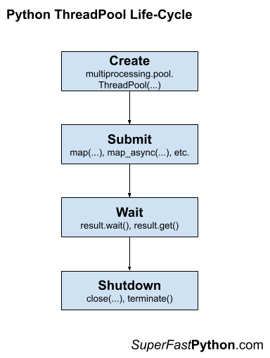
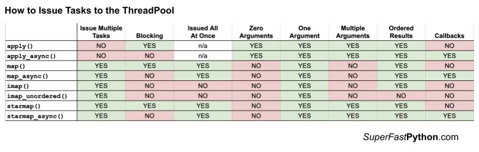
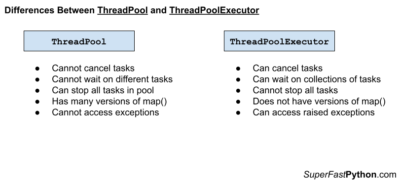

Python ThreadPool: The Complete Guide
The Python ThreadPool provides reusable worker threads in Python.
The ThreadPool is a lesser-known class that is part of the Python standard library. It offers easy-to-use pools of worker threads and is ideal for making loops of I/O-bound tasks concurrent and for executing tasks asynchronously.
This book-length guide provides a detailed and comprehensive walkthrough of the Python ThreadPool API.
Some tips:
- You may want to bookmark this guide and read it over a few sittings.
- You can download a zip of all code used in this guide.
- You can get help, ask a question in the comments or email me.
- You can jump to the topics that interest you via the table of contents (below).
Let's dive in.
Python Threads and the Need for Threads Pools
So, what are threads and why do we care about thread pools?
What Are Python Threads
A thread refers to a thread of execution by a computer program.
Every Python program is a process with one thread called the main thread used to execute your program instructions. Each process is in fact one instance of the Python interpreter that executes Python instructions (Python byte-code), which is a slightly lower level than the code you type into your Python program.
Sometimes, we may need to create additional threads within our Python process to execute tasks concurrently.
Python provides real naive (system-level) threads via the threading.Thread class.
A task can be run in a new thread by creating an instance of the Thread class and specifying the function to run in the new thread via the target argument.
...
# create and configure a new thread to run a function
thread = Thread(target=task)Once the thread is created, it must be started by calling the start() function.
...
# start the task in a new thread
thread.start()We can then wait around for the task to complete by joining the thread; for example
...
# wait for the task to complete
thread.join()We can demonstrate this with a complete example of a task that sleeps for a moment and prints a message.
The complete example of executing a target task function in a separate thread is listed below.
# SuperFastPython.com
# example of executing a target task function in a separate thread
from time import sleep
from threading import Thread
# a simple task that blocks for a moment and prints a message
def task():
# block for a moment
sleep(1)
# display a message
print('This is coming from another thread')
# create and configure a new thread to run a function
thread = Thread(target=task)
# start the task in a new thread
thread.start()
# display a message
print('Waiting for the new thread to finish...')
# wait for the task to complete
thread.join()
Running the example creates the thread object to run the task() function.
The thread is started and the task() function is executed in another thread. The task sleeps for a moment; meanwhile, in the main thread, a message is printed that we are waiting around and the main thread joins the new thread.
Finally, the new thread finishes sleeping, prints a message, and closes. The main thread then carries on and also closes as there are no more instructions to execute.
Waiting for the new thread to finish...
This is coming from another threadYou can learn more about Python threads in the tutorial:
This is useful for running one-off ad hoc tasks in a separate thread, although it becomes cumbersome when you have many tasks to run.
Each thread that is created requires the application of resources (e.g. memory for the thread's stack space). The computational costs for setting up threads can become expensive if we are creating and destroying many threads over and over for ad hoc tasks.
Instead, we would prefer to keep worker threads around for reuse if we expect to run many ad hoc tasks throughout our program.
This can be achieved using a thread pool.
What Are Thread Pools
A thread pool is a programming pattern for automatically managing a pool of worker threads.
The pool is responsible for a fixed number of threads.
- It controls when the threads are created, such as just-in-time when they are needed.
- It also controls what threads should do when they are not being used, such as making them wait without consuming computational resources.
Each thread in the pool is called a worker or a worker thread. Each worker is agnostic to the type of tasks that are executed, along with the user of the thread pool to execute a suite of similar (homogeneous) or dissimilar tasks (heterogeneous) in terms of the function called, function arguments, task duration, and more.
Worker threads are designed to be re-used once the task is completed and provide protection against the unexpected failure of the task, such as raising an exception, without impacting the worker thread itself.
This is unlike a single thread that is configured for the single execution of one specific task.
The pool may provide some facility to configure the worker threads, such as running an initialization function and naming each worker thread using a specific naming convention.
Thread pools can provide a generic interface for executing ad hoc tasks with a variable number of arguments, but do not require that we choose a thread to run the task, start the thread, or wait for the task to complete.
It can be significantly more efficient to use a thread pool instead of manually starting, managing, and closing threads, especially with a large number of tasks.
Python provides a thread pool via the ThreadPool class.
ThreadPool Class in Python
The multiprocessing.pool.ThreadPool class in Python provides a pool of reusable threads for executing ad hoc tasks.
A thread pool object which controls a pool of worker threads to which jobs can be submitted.
-- multiprocessing — Process-based parallelism
The ThreadPool class extends the Pool class. The Pool class provides a pool of worker processes for process-based concurrency.
Although the ThreadPool class is in the multiprocessing module it offers thread-based concurrency.
We can create a thread pool by instantiating the ThreadPool class and specifying the number of threads via the "processes" argument; for example:
...
# create a thread pool
pool = ThreadPool(processes=10)We can issue one-off tasks to the ThreadPool using methods such as apply() or we can apply the same function to an iterable of items using methods such as map().
The map() function matches the built-in map() function and takes a function name and an iterable of items. The target function will then be called for each item in the iterable as a separate task in the thread pool. An iterable of results will be returned if the target function returns a value.
For example:
...
# call a function on each item in a list and handle results
for result in pool.map(task, items):
# handle the result...
The ThreadPool class offers many variations on the map() method for issuing tasks.
We can issue tasks asynchronously to the ThreadPool, which returns an instance of an AsyncResult immediately. One-off tasks can be used via apply_async(), whereas the map_async() offers an asynchronous version of the map() method.
The AsyncResult object provides a handle on the asynchronous task that we can use to query the status of the task, wait for the task to complete, or get the return value from the task, once it is available.
For example:
...
# issue a task to the pool and get an asyncresult immediately
result = pool.apply_async(task)
# get the result once the task is done
value = result.get()Once we are finished with the ThreadPool, it can be shut down by calling the close() method in order to release all of the worker threads and their resources.
For example:
...
# shutdown the thread pool
pool.close()The life-cycle of creating and shutting down the thread pool can be simplified by using the context manager that will automatically close the ThreadPool.
For example:
...
# create a thread pool
with ThreadPool(10) as pool:
# call a function on each item in a list and handle results
for result in pool.map(task, items):
# handle the result...
# ...
# shutdown automatically
You can learn more about how to use the ThreadPool class in the tutorial:
Now that we are familiar with the functionality of a ThreadPool class, let's take a closer look at the lifecycle of the ThreadPool objects.
Life-Cycle of the ThreadPool
The multiprocessing.pool.ThreadPool provides a pool of generic worker threads.
It was designed to be easy and straightforward to use thread-based wrapper for the multiprocessing.pool.Pool class.
There are four main steps in the life-cycle of using the ThreadPool class, they are: create, submit, wait, and shutdown.
- Create: Create the thread pool by calling the constructor ThreadPool().
- Submit: Submit tasks synchronously or asynchronously.
- 2a. Submit Tasks Synchronously
- 2b. Submit Tasks Asynchronously
- Wait: Wait and get results as tasks complete (optional).
- 3a. Wait on AsyncResult objects to Complete
- 3b. Wait on AsyncResult objects for Result
- Shutdown: Shut down the thread pool by calling shutdown().
- 4a. Shutdown Automatically with the Context Manager
The following figure helps to picture the life-cycle of the ThreadPool class.

Let's take a closer look at each life-cycle step in turn.
Step 1. Create the Thread Pool
First, a multiprocessing.pool.ThreadPool instance must be created.
When an instance of a ThreadPool is created it may be configured.
The thread pool can be configured by specifying arguments to the ThreadPool class constructor.
The arguments to the constructor are as follows:
- processes: Maximum number of worker threads (not processes) to use in the pool.
- initializer: Function executed after each worker thread is created.
- initargs: Arguments to the worker threads initialization function.
Perhaps the most important argument is "processes" that specify the number of worker threads in the thread pool. It is named for the number of processes in the multiprocessing.pool.Pool class, although here it does refer to the number of threads.
By default, the ThreadPool class constructor does not take any arguments.
For example:
...
# create a default thread pool
pool = multiprocessing.pool.ThreadPool()This will create a thread pool that will use a number of worker threads that match the number of logical CPU cores in your system.
For example, if we had 4 physical CPU cores with hyperthreading, this would mean we would have 8 logical CPU cores and this would be the default number of workers in the thread pool.
We can set the "processes" argument to specify the number of threads to create and use as workers in the thread pool.
For example:
...
# create a thread pool with 4 workers
pool = multiprocessing.pool.ThreadPool(processes=4)It is a good idea to test your application in order to determine the number of worker threads that result in the best performance.
For example, for many blocking IO tasks, you may achieve the best performance by setting the number of threads to be equal to the number of tasks themselves, e.g. 100s or 1000s.
Next, let's look at how we might issue tasks to the thread pool.
Step 2. Submit Tasks to the Thread Pool
Once the ThreadPool has been created, you can submit tasks execution.
As discussed, there are two main approaches for submitting tasks to the thread pool, they are:
- Issue tasks synchronously.
- Issue tasks asynchronously.
You can learn more about the different ways to issue tasks to the ThreadPool in the tutorial:
Let's take a closer look at each approach in turn.
Step 2a. Issue Tasks Synchronously
Issuing tasks synchronously means that the caller will block until the issued task or tasks have been completed.
Blocking calls to the thread pool include apply(), map(), and starmap().
- Use apply()
- Use map()
- Use starmap()
We can issue one-off tasks to the thread pool using the apply() function.
The apply() function takes the name of the function to execute by a worker thread. The call will block until the function is executed by a worker thread, after which time it will return.
For example:
...
# issue a task to the thread pool
pool.apply(task)The thread pool provides a parallel version of the built-in map() function for issuing tasks.
For example:
...
# iterates return values from the issued tasks
for result in map(task, items):
# ...
The starmap() function is the same as the parallel version of the map() function, except that it allows each function call to take multiple arguments. Specifically, it takes an iterable where each item is an iterable of arguments for the target function.
For example:
...
# iterates return values from the issued tasks
for result in starmap(task, items):
# ...
Step 2b. Issue Tasks Asynchronously
Issuing tasks asynchronously to the thread pool means that the caller will not block, allowing the caller to continue on with other work while the tasks are executing.
The non-blocking calls to issue tasks to the thread pool return immediately and provide a hook or mechanism to check the status of the tasks and get the results later. The caller can issue tasks and carry on with the program.
Non-blocking calls to the thread pool include apply_async(), map_async(), and starmap_async().
The imap() and imap_unordered() are interesting. They return immediately, so they are technically non-blocking calls. The iterable that is returned will yield return values as tasks are completed. This means traversing the iterable will block.
- Use apply_async()
- Use map_async()
- Use imap()
- Use imap_unordered()
- Use starmap_async()
The apply_async(), map_async(), and starmap_async() functions are asynchronous versions of the apply(), map(), and starmap() functions described above.
They all return an AsyncResult object immediately that provides a handle on the issued task or tasks.
For example:
...
# issue tasks to the thread pool asynchronously
result = map_async(task, items)The imap() function takes the name of a target function and an iterable like the map() function.
The difference is that the imap() function is lazier in two ways:
- imap() issues multiple tasks to the thread pool one by one, instead of all at once like map().
- imap() returns an iterable that yields results one-by-one as tasks are completed, rather than one-by-one after all tasks have been completed like map().
For example:
...
# iterates results as tasks are completed in order
for result in imap(task, items):
# ...
The imap_unordered() is the same as imap(), except that the returned iterable will yield return values in the order that tasks are completed (e.g. out of order).
For example:
...
# iterates results as tasks are completed, in the order they are completed
for result in imap_unordered(task, items):
# ...
Now that we know how to issue tasks to the thread pool, let's take a closer look at waiting for tasks to complete or getting results.
Step 3. Wait for Tasks to Complete (Optional)
An AsyncResult object is returned when issuing tasks to ThreadPool the thread pool asynchronously.
This can be achieved via any of the following methods on the thread pool:
- apply_async() to issue one task.
- map_async() to issue multiple tasks.
- starmap_async() to issue multiple tasks that take multiple arguments.
An AsyncResult provides a handle on one or more issued tasks.
It allows the caller to check on the status of the issued tasks, to wait for the tasks to complete, and get the results once tasks are completed.
We do not need to use the returned AsyncResult, such as if issued tasks do not return values and we are not concerned with when the tasks are complete or whether they are completed successfully.
That is why this step in the life cycle is optional.
Nevertheless, there are two main ways we can use an AsyncResult to wait, they are:
- Wait for issued tasks to complete.
- Wait for a result from issued tasks.
Let's take a closer look at each approach in turn.
3a. Wait on AsyncResult objects to Complete
We can wait for all tasks to be completed via the AsyncResult.wait() function.
This will block until all issued tasks are completed.
For example:
...
# wait for issued task to complete
result.wait()If the tasks have already been completed, then the wait() function will return immediately.
A "timeout" argument can be specified to set a limit in seconds for how long the caller is willing to wait.
If the timeout expires before the tasks are complete, the wait() function will return.
When using a timeout, the wait() function does not give an indication that it returned because tasks were completed or because the timeout elapsed. Therefore, we can check if the tasks are completed via the ready() function.
For example:
...
# wait for issued task to complete with a timeout
result.wait(timeout=10)
# check if the tasks are all done
if result.ready()
print('All Done')
...
else :
print('Not Done Yet')
...
3b. Wait on AsyncResult objects for Result
We can get the result of an issued task by calling the AsyncResult.get() function.
This will return the result of the specific function called to issue the task.
- apply_async(): Returns the return value of the target function.
- map_async(): Returns an iterable over the return values of the target function.
- starmap_async(): Returns an iterable over the return values of the target function.
For example:
...
# get the result of the task or tasks
value = result.get()If the issued tasks have not yet been completed, then get() will block until the tasks are finished.
If an issued task raises an exception, the exception will be re-raised once the issued tasks are completed.
We may need to handle this case explicitly if we expect a task to raise an exception on failure.
A “timeout” argument can be specified. If the tasks are still running and do not completed within the specified number of seconds, a multiprocessing.TimeoutError is raised.
You can learn more about the AsyncResult object in the tutorial:
Next, let's look at how we might shut down the thread pool once we are finished with it.
Step 4. Shutdown the Thread Pool
The ThreadPool can be closed once we have no further tasks to issue.
There are two ways to shut down the thread pool.
They are:
- Call close().
- Call terminate().
The close() function will return immediately and the pool will not take any further tasks.
For example:
...
# close the thread pool
pool.close()Alternatively, we may want to forcefully terminate all worker threads, regardless of whether they are executing tasks or not.
This can be achieved via the terminate() function.
For example:
...
# forcefully close all worker threads
pool.terminate()You can learn more about shutting down the ThreadPool in the tutorial:
We may want to then wait for all tasks in the pool to finish.
This can be achieved by calling the join() function on the pool.
For example:
...
# wait for all issued tasks to complete
pool.join()An alternate approach is to shut down the thread pool automatically with the context manager interface.
Step 4a. ThreadPool Context Manager
A context manager is an interface on Python objects for defining a new run context.
Python provides a context manager interface on the thread pool.
This achieves a similar outcome to using a try-except-finally pattern, with less code.
Specifically, it is more like a try-finally pattern, where any exception handling must be added and occur within the code block itself.
For example:
...
# create and configure the thread pool
with multiprocessing.pool.ThreadPool() as pool:
# issue tasks to the pool
# ...
# close the pool automatically
There is an important difference with the try-finally block.
The ThreadPool class extends the Pool class. As such, if we look at the source code for the multiprocessing.Pool class, we can see that the __exit__() method calls the terminate() method on the thread pool when exiting the context manager block.
This means that the pool is forcefully closed once the context manager block is exited. It ensures that the resources of the thread pool are released before continuing on, but does not ensure that tasks that have already been issued are completed first.
You can learn more about the ThreadPool context manager interface in the tutorial:
ThreadPool Example
In this section, we will look at a more complete example of using the ThreadPool.
Consider a situation where we might want to check what ports are open on a remote server.
This is called a port scanner and can be a fun exercise in socket programming.
A simple way to implement a port scanner is to loop over all the ports you want to test and attempt to make a socket connection on each. If a connection can be made, we disconnect immediately and report that the port on the server is open.
For example, we know that port 80 is open on python.org, but what other ports might be open?
Historically, having many open ports on a server was a security risk, so it is common to lock down a public-facing server and close all non-essential ports to external traffic. This means scanning public servers will likely yield few open ports in the best case or will deny future access in the worst case if the server thinks you're trying to break in.
As such, although developing a port scanner is a fun socket programming exercise, we must be careful in how we use it and what servers we scan.
Next, let's look at how we can open a socket connection on a single port.
Open a Socket Connection on a Port
Python provides socket communication in the socket module.
A socket must first be configured in terms of the type of host address and type of socket we will create, then the configured socket can be connected.
You can learn more about the socket module in Python here:
There are many ways to specify a host address, although perhaps the most common is the IP address (IPv4) or the domain name resolved by DNS. We can configure a socket to expect this type of address via the AF_INET constant.
There are also different socket types, the most common being a TCP or stream type socket and a less reliable UDP type socket. We will attempt to open TCP sockets in this case, as they are more commonly used for services like email, web, FTP, and so on. We can configure our socket for TCP using the SOCK_STREAM constant.
We can create and configure our socket as follows:
...
# set a timeout of a few seconds
sock = socket(AF_INET, SOCK_STREAM)We must close our socket once we are finished with it by calling the close() function; for example:
...
# close the socket
sock.close()While working with the socket, an exception may be raised for many reasons, such as an invalid address or a failure to connect. We must ensure that the connection is closed regardless, therefore we can automatically close the socket using the context manager; for example:
...
# create and configure the socket
with socket(AF_INET, SOCK_STREAM) as sock:
# ...
Next, we can further configure the socket before we open a connection.
Specifically, it is a good idea to set a timeout because attempting to open network connections can be slow. We want to give up connecting and raise an exception if a given number of seconds elapses and we still haven't connected.
This can be achieved by calling the settimeout() function on the socket. In this case, we will use a somewhat aggressive timeout of 3 seconds.
...
# set a timeout of a few seconds
sock.settimeout(3)Finally, we can attempt to make a connection to a server.
This requires a hostname and a port, which we can pair together into a tuple and pass to the connect() function.
For example:
...
# attempt to connect
sock.connect((host, port))If the connection succeeds, we could start sending data to the server and receive it back via this socket using the protocol suggested by the port number. We don't want to communicate with the server so we will close the connection immediately.
If the connection fails, an exception will be raised indicating that the port is likely not open (or not open to us).
Therefore, we can wrap the attempt to connect in some exception handling.
...
# connecting may fail
try:
# attempt to connect
sock.connect((host, port))
# a successful connection was made
except:
# ignore the failure, the port is closed to us
Tying this together, the test_port_number() will take a host number and a port will return True if a socket can be opened or False otherwise.
# returns True if a connection can be made, False otherwise
def test_port_number(host, port):
# create and configure the socket
with socket(AF_INET, SOCK_STREAM) as sock:
# set a timeout of a few seconds
sock.settimeout(3)
# connecting may fail
try:
# attempt to connect
sock.connect((host, port))
# a successful connection was made
return True
except:
# ignore the failure
return False
Next, let's look at how we can use this function we have developed to scan a range of ports.
Scan a Range of Ports on a Server
We can scan a range of ports on a given host.
Many common internet services are provided on ports between 0 and 1024.
The viable range of ports is 0 to 65535, and you can see a list of the most common port numbers and the services that use them in the file /etc/services on POSIX systems.
Wikipedia also has a page that lists the most common port numbers:
We will limit our scanning to the range of 0 to 1024.
To scan a range of ports, we can repeatedly call our test_port_number() function that we developed in the previous section and report any ports that permit a connection as 'open'.
The port_scan() function below implements this reporting of any open ports that are discovered.
# scan port numbers on a host
def port_scan(host, ports):
print(f'Scanning {host}...')
# scan each port number
for port in ports:
if test_port_number(host, port):
print(f'> {host}:{port} open')
Finally, we can call this function and specify the host and range of ports.
In this case, we will port scan python.org (out of love for python, not malicious intent).
...
# define host and port numbers to scan
HOST = 'python.org'
PORTS = range(1024)
# test the ports
port_scan(HOST, PORTS)
We would expect that at the least port 80 would be open for HTTP connections.
Tying this together, the complete example of port scanning a host in Python is listed below.
# SuperFastPython.com
# scan a range of port numbers on the host one by one
from socket import AF_INET
from socket import SOCK_STREAM
from socket import socket
# returns True if a connection can be made, False otherwise
def test_port_number(host, port):
# create and configure the socket
with socket(AF_INET, SOCK_STREAM) as sock:
# set a timeout of a few seconds
sock.settimeout(3)
# connecting may fail
try:
# attempt to connect
sock.connect((host, port))
# a successful connection was made
return True
except:
# ignore the failure
return False
# scan port numbers on a host
def port_scan(host, ports):
print(f'Scanning {host}...')
# scan each port number
for port in ports:
if test_port_number(host, port):
print(f'> {host}:{port} open')
# protect the entry point
if __name__ == '__main__':
# define host and port numbers to scan
host = 'python.org'
ports = range(1024)
# test the ports
port_scan(host, ports)
Running the example attempts to make a connection for each port number between 0 and 1023 (one minus 1024) and reports all open ports.
In this case, we can see that port 80 for HTTP is open as expected, and port 443 is also open for HTTPS.
The program works fine, but it is painfully slow.
On my system, it took 235.8 seconds to complete (nearly 4 minutes).
Scanning python.org...
> python.org:80 open
> python.org:443 openNext, let's explore how we might update the example to check ports concurrently using the ThreadPool.
How to Scan Ports Concurrently (fast)
The program for port scanning a server can be adapted to use the ThreadPool with very little change.
The test_port_number() function was already called separately for each port. This can be performed in a separate thread so each port is tested concurrently.
We want to report port numbers in numerical order. This can be achieved by submitting the tasks to the thread pool using the map() function and then iterating the True/False results returned for each port number.
Firstly, we can create the thread pool with one thread per port to be tested.
...
# create the thread pool
with ThreadPool(len(ports)) as pool:
# ...
We can issue the tasks to the ThreadPool using the map() method and then iterate the True/False results returned for each port number.
The problem is that the map() method only supports target functions that take a single argument.
Therefore, we must use the starmap() method instead.
We can prepare the iterable of arguments for each call to the test_port_number() function using a list comprehension, then call starmap() directly, which will return an iterable of return values once all tasks are complete.
...
# prepare arguments for starmap
args = [(host,p) for p in ports]
# dispatch all tasks
results = pool.starmap(test_port_number, args)We can then iterate over the return values and report the results.
The problem is, that we want to report the return value (open True or False) along with the port number.
This can be achieved using the zip() built-in function which can traverse two or more iterables at once and yield a value from each. In this case, we can zip() our return values and port numbers iterables.
...
# report results in order
for port,is_open in zip(ports,results):
if is_open:
print(f'> {host}:{port} open')
Tying this together, the complete example is listed below.
# SuperFastPython.com
# scan a range of port numbers on a host concurrently
from socket import AF_INET
from socket import SOCK_STREAM
from socket import socket
from multiprocessing.pool import ThreadPool
# returns True if a connection can be made, False otherwise
def test_port_number(host, port):
# create and configure the socket
with socket(AF_INET, SOCK_STREAM) as sock:
# set a timeout of a few seconds
sock.settimeout(3)
# connecting may fail
try:
# attempt to connect
sock.connect((host, port))
# a successful connection was made
return True
except:
# ignore the failure
return False
# scan port numbers on a host
def port_scan(host, ports):
print(f'Scanning {host}...')
# create the thread pool
with ThreadPool(len(ports)) as pool:
# prepare the arguments
args = [(host,port) for port in ports]
# dispatch all tasks
results = pool.starmap(test_port_number, args)
# report results in order
for port,is_open in zip(ports,results):
if is_open:
print(f'> {host}:{port} open')
# protect the entry point
if __name__ == '__main__':
# define host and port numbers to scan
host = 'python.org'
ports = range(1024)
# test the ports
port_scan(host, ports)
Running the program attempts to open a socket connection for all ports in the range 0 and 1023 and reports ports 80 and 443 open as before.
In this case, the program is dramatically faster.
On my system, it completed in about 3.1 seconds, compared to the 235.8 seconds for the serial case, which is about 76 times faster.
Scanning python.org...
> python.org:80 open
> python.org:443 openNext, let's explore how we might configure the ThreadPool.
How to Configure the ThreadPool
The ThreadPool can be configured by specifying arguments to the multiprocessing.pool.ThreadPool class constructor.
The arguments to the constructor are as follows:
- processes: Maximum number of worker threads (not processes) to use in the pool.
- initializer: Function executed after each worker thread is created.
- initargs: Arguments to the worker thread initialization function.
Unlike the multiprocessing.pool.Pool class that the ThreadPool extends, the ThreadPool does not have a "maxtasksperchild" argument to limit the number of tasks per worker. Also, because we are using threads instead of processes, we cannot configure the multiprocessing "context" used by the pool.
By default the multiprocessing.pool.ThreadPool class constructor does not take any arguments.
For example:
...
# create a default thread pool
pool = multiprocessing.pool.ThreadPool()This will create a thread pool that will use a number of worker threads that match the number of logical CPU cores in your system.
It will not call a function that initializes the worker threads when they are created.
Each worker thread will be able to execute an unlimited number of tasks within the pool.
Now that we know what configuration the ThreadPool takes, let's look at how we might configure each aspect of the ThreadPool.
How to Configure the Number of Worker Threads
We can configure the number of worker threads in the multiprocessing.pool.ThreadPool by setting the "processes" argument in the constructor.
Although the argument is called "processes", it actually controls the number of worker threads.
processes is the number of worker threads to use. If processes is None then the number returned by os.cpu_count() is used.
-- multiprocessing — Process-based parallelism
We can set the "processes" argument to specify the number of worker threads to create and use as workers in the ThreadPool.
For example:
...
# create a threads pool with 4 workers
pool = multiprocessing.pool.ThreadPool(processes=4)The "processes" argument is the first argument in the constructor and does not need to be specified by name to be set, for example:
...
# create a thread pool with 4 workers
pool = multiprocessing.pool.ThreadPool(4)If we are using the context manager to create the thread pool so that it is automatically shut down, then you can configure the number of threads in the same manner.
For example:
...
# create a thread pool with 4 workers
with multiprocessing.pool.ThreadPool(4):
# ...
You can learn more about how to configure the number of worker threads in the tutorial:
Next, let's look at how we might configure the worker thread initialization function.
How to Configure the Initialization Function
We can configure worker threads in the ThreadPool to execute an initialization function prior to executing tasks.
This can be achieved by setting the "initializer" argument when configuring the ThreadPool via the class constructor.
The "initializer" argument can be set to the name of a function that will be called to initialize the worker threads.
If initializer is not None then each worker process will call initializer(*initargs) when it starts.
-- multiprocessing — Process-based parallelism
Although the API documentation describes worker processes, the function is used to initialize worker threads.
For example:
# worker thread initialization function
def worker_init():
# ...
...
# create a thread pool and initialize workers
pool = multiprocessing.pool.ThreadPool(initializer=worker_init)
If our worker thread initialization function takes arguments, they can be specified to the ThreadPool constructor via the "initargs" argument, which takes an ordered list or tuple of arguments for the custom initialization function.
For example:
# worker thread initialization function
def worker_init(arg1, arg2, arg3):
# ...
...
# create a thread pool and initialize workers
pool = multiprocessing.pool.ThreadPool(initializer=worker_init, initargs=(arg1, arg2, arg3))
You can learn more about how to initialize worker threads in the tutorial:
Next, let's explore how we might issue tasks to the ThreadPool.
ThreadPool Issue Tasks
In this section, we will take a closer look at the different ways we can issue tasks to the ThreadPool.
The pool provides 8 ways to issue tasks to workers in the ThreadPool.
They are:
- apply()
- apply_async()
- map()
- map_async()
- imap()
- imap_unordered()
- starmap()
- starmap_async()
The ThreadPool extends the Pool class and the methods for issuing tasks are defined on the Pool class.
Let's take a closer and brief look at each approach in turn.
How to Use apply()
We can issue one-off tasks to the ThreadPool using the apply() method.
The apply() method takes the name of the function to execute by a worker thread. The call will block until the function is executed by a worker thread, after which time it will return.
For example:
...
# issue a task to the thread pool
pool.apply(task)The apply() method is a concurrent version of the now deprecated built-in apply() function.
In summary, the capabilities of the apply() method are as follows:
- Issues a single task to the ThreadPool.
- Supports multiple arguments to the target function.
- Blocks until the call to the target function is complete.
You can learn more about the apply() method in the tutorial:
How to Use apply_async()
We can issue asynchronous one-off tasks to the ThreadPool using the apply_async() method.
Asynchronous means that the call to the ThreadPool does not block, allowing the caller that issued the task to carry on.
The apply_async() method takes the name of the function to execute in a worker thread and returns immediately with an AsyncResult object for the task.
It supports a callback function for the result and an error callback function if an error is raised.
For example:
...
# issue a task asynchronously to the thread pool
result = pool.apply_async(task)Later the status of the issued task may be checked or retrieved.
For example:
...
# get the result from the issued task
value = result.get()In summary, the capabilities of the apply_async() method are as follows:
- Issues a single task to the ThreadPool.
- Supports multiple arguments to the target function.
- Does not block, instead returns an AsyncResult.
- Supports callback for the return value and any raised errors.
You can learn more about the apply_async() method in the tutorial:
How to Use map()
The ThreadPool provides a concurrent version of the built-in map() function for issuing tasks.
The map() method takes the name of a target function and an iterable. A task is created to call the target function for each item in the provided iterable. It returns an iterable over the return values from each call to the target function.
The iterable is first traversed and all tasks are issued at once. A “chunksize” argument can be specified to split the tasks into groups which may be sent to each worker thread to be executed in batch.
For example:
...
# iterates return values from the issued tasks
for result in map(task, items):
# ...
The map() method is a concurrent version of the built-in map() function.
In summary, the capabilities of the map() method are as follows:
- Issue multiple tasks to the ThreadPool all at once.
- Returns an iterable over return values.
- Supports a single argument to the target function.
- Blocks until all issued tasks are completed.
- Allows tasks to be grouped and executed in batches by workers.
You can learn more about the map() method in the tutorial:
How to Use map_async()
The ThreadPool provides an asynchronous version of the map() method for issuing tasks called map_async().
The map_async() method takes the name of a target function and an iterable. A task is created to call the target function for each item in the provided iterable. It does not block and returns immediately with an AsyncResult that may be used to access the results.
The iterable is first traversed and all tasks are issued at once. A “chunksize” argument can be specified to split the tasks into groups which may be sent to each worker thread to be executed in batch. It supports a callback function for the result and an error callback function if an error is raised.
For example:
...
# issue tasks to the thread pool asynchronously
result = map_async(task, items)Later the status of the tasks can be checked and the return values from each call to the target function may be iterated.
For example:
...
# iterate over return values from the issued tasks
for value in result.get():
# ...
In summary, the capabilities of the map_async() method are as follows:
- Issue multiple tasks to the ThreadPool all at once.
- Supports a single argument to the target function.
- Does not block, instead returns an AsyncResult for accessing results later.
- Allows tasks to be grouped and executed in batches by workers.
- Supports callback for the return value and any raised errors.
You can learn more about the map_async() method in the tutorial:
How to Use imap()
We can issue tasks to the ThreadPool one by one via the imap() method.
The imap() method takes the name of a target function and an iterable. A task is created to call the target function for each item in the provided iterable.
It returns an iterable over the return values from each call to the target function. The iterable will yield return values as tasks are completed, in the order that tasks were issued.
The imap() function is lazy in that it traverses the provided iterable and issues tasks to the ThreadPool one by one as space becomes available in the ThreadPool. A “chunksize” argument can be specified to split the tasks into groups which may be sent to each worker thread to be executed in batch.
For example:
...
# iterates results as tasks are completed in order
for result in imap(task, items):
# ...
The imap() method is a concurrent version of the now deprecated itertools.imap() function.
In summary, the capabilities of the imap() method are as follows:
- Issue multiple tasks to the ThreadPool, one by one.
- Returns an iterable over return values.
- Supports a single argument to the target function.
- Blocks until each task is completed in order they were issued.
- Allows tasks to be grouped and executed in batches by workers.
You can learn more about the imap() method in the tutorial:
How to Use imap_unordered()
We can issue tasks to the ThreadPool one by one via the imap_unordered() method.
The imap_unordered() method takes the name of a target function and an iterable. A task is created to call the target function for each item in the provided iterable.
It returns an iterable over the return values from each call to the target function. The iterable will yield return values as tasks are completed, in the order that tasks were completed, not the order they were issued.
The imap_unordered() function is lazy in that it traverses the provided iterable and issues tasks to the ThreadPool one by one as space becomes available in the ThreadPool. A “chunksize” argument can be specified to split the tasks into groups which may be sent to each worker thread to be executed in batch.
For example:
...
# iterates results as tasks are completed, in the order they are completed
for result in imap_unordered(task, items):
# ...
In summary, the capabilities of the imap_unordered() method are as follows:
- Issue multiple tasks to the ThreadPool, one by one.
- Returns an iterable over return values.
- Supports a single argument to the target function.
- Blocks until each task is completed in the order they are completed.
- Allows tasks to be grouped and executed in batches by workers.
You can learn more about the imap_unordered() method in the tutorial:
How to Use starmap()
We can issue multiple tasks to the ThreadPool using the starmap() method.
The starmap() method takes the name of a target function and an iterable. A task is created to call the target function for each item in the provided iterable. Each item in the iterable may itself be an iterable, allowing multiple arguments to be provided to the target function.
It returns an iterable over the return values from each call to the target function. The iterable is first traversed and all tasks are issued at once. A “chunksize” argument can be specified to split the tasks into groups which may be sent to each worker thread to be executed in batch.
For example:
...
# iterates return values from the issued tasks
for result in starmap(task, items):
# ...
The starmap() method is a concurrent version of the itertools.starmap() function.
In summary, the capabilities of the starmap() method are as follows:
- Issue multiple tasks to the ThreadPool all at once.
- Returns an iterable over return values.
- Supports multiple arguments to the target function.
- Blocks until all issued tasks are completed.
- Allows tasks to be grouped and executed in batches by workers.
You can learn more about the starmap() method in the tutorial:
How to Use starmap_async()
We can issue multiple tasks asynchronously to the ThreadPool using the starmap_async() function.
The starmap_async() function takes the name of a target function and an iterable. A task is created to call the target function for each item in the provided iterable. Each item in the iterable may itself be an iterable, allowing multiple arguments to be provided to the target function.
It does not block and returns immediately with an AsyncResult that may be used to access the results.
The iterable is first traversed and all tasks are issued at once. A “chunksize” argument can be specified to split the tasks into groups which may be sent to each worker thread to be executed in batch. It supports a callback function for the result and an error callback function if an error is raised.
For example:
...
# issue tasks to the thread pool asynchronously
result = starmap_async(task, items)Later the status of the tasks can be checked and the return values from each call to the target function may be iterated.
For example:
...
# iterate over return values from the issued tasks
for value in result.get():
# ...
In summary, the capabilities of the starmap_async() method are as follows:
- Issue multiple tasks to the ThreadPool all at once.
- Supports multiple arguments to the target function.
- Does not block, instead returns an AsyncResult for accessing results later.
- Allows tasks to be grouped and executed in batches by workers.
- Supports callback for the return value and any raised errors.
You can learn more about the starmap_async() method in the tutorial:
How To Choose The Method
There are so many methods to issue tasks to the ThreadPool, how do you choose?
Some properties we may consider when comparing functions used to issue tasks to the ThreadPool include:
- The number of tasks we may wish to issue at once.
- Whether the function call to issue tasks is blocking or not.
- Whether all of the tasks are issued at once or one-by-one
- Whether the call supports zero, one, or multiple arguments to the target function.
- Whether results are returned in order or not.
- Whether the call supports callback functions or not.
The table below summarizes each of these properties and whether they are supported by each call to the ThreadPool.
A YES (green) cell in the table does not mean "good". It means that the function call has a given property that may or may not be useful or required for your specific use case.

You can learn more about how to choose a method for issuing tasks to the ThreadPool in the tutorial:
How to Use AsyncResult in Detail
An AsyncResult object is returned when issuing tasks to ThreadPool asynchronously.
This can be achieved via any of the following methods on the ThreadPool:
- apply_async() to issue one task.
- map_async() to issue multiple tasks.
- starmap_async() to issue multiple tasks that take multiple arguments.
An AsyncResult provides a handle on one or more issued tasks.
It allows the caller to check on the status of the issued tasks, to wait for the tasks to complete, and to get the results once tasks are completed.
The AsyncResult class is straightforward to use.
First, you must get an AsyncResult object by issuing one or more tasks to the ThreadPool any of the apply_async(), map_async(), or starmap_async() functions.
For example:
...
# issue a task to the thread pool
result = pool.apply_async(...)Once you have an AsyncResult object, you can use it to query the status and get results from the task.
Get a Result
We can get the result of an issued task by calling the AsyncResult.get() function.
Return the result when it arrives.
-- multiprocessing — Process-based parallelism
This will return the result of the specific function called to issue the task.
- apply_async(): Returns the return value of the target function.
- map_async(): Returns an iterable over the return values of the target function.
- starmap_async(): Returns an iterable over the return values of the target function.
For example:
...
# get the result of the task or tasks
value = result.get()If the issued tasks have not yet been completed, then get() will block until the tasks are finished.
A "timeout" argument can be specified. If the tasks are still running and do not completed within the specified number of seconds, a multiprocessing.TimeoutError is raised.
If timeout is not None and the result does not arrive within timeout seconds then multiprocessing.TimeoutError is raised.
-- multiprocessing — Process-based parallelism
For example:
...
try:
# get the task result with a timeout
value = result.get(timeout=10)
except multiprocessing.TimeoutError as e:
# ...
If an issued task raises an exception, the exception will be re-raised once the issued tasks are completed.
We may need to handle this case explicitly if we expect a task to raise an exception on failure.
If the remote call raised an exception then that exception will be re-raised by get().
-- multiprocessing — Process-based parallelism
For example:
...
try:
# get the task result that might raise an exception
value = result.get()
except Exception as e:
# ...
Wait For Completion
We can wait for all tasks to be completed via the AsyncResult.wait() function.
This will block until all issued tasks are completed.
For example:
...
# wait for issued task to complete
result.wait()If the tasks have already been completed, then the wait() function will return immediately.
A "timeout" argument can be specified to set a limit in seconds for how long the caller is willing to wait.
Wait until the result is available or until timeout seconds pass.
-- multiprocessing — Process-based parallelism
If the timeout expires before the tasks are complete, the wait() function will return.
When using a timeout, the wait() function does not give an indication that it returned because tasks were completed or because the timeout elapsed. Therefore, we can check if the tasks are completed via the ready() function.
For example:
...
# wait for issued task to complete with a timeout
result.wait(timeout=10)
# check if the tasks are all done
if result.ready()
print('All Done')
...
else :
print('Not Done Yet')
...
Check if Tasks Are Completed
We can check if the issued tasks are completed via the AsyncResult.ready() function.
Return whether the call has completed.
-- multiprocessing — Process-based parallelism
It returns True if the tasks have been completed, successfully or otherwise, or False if the tasks are still running.
For example:
...
# check if tasks are still running
if result.ready():
print('Tasks are done')
else:
print('Tasks are not done')
Check if Tasks Were Successful
We can check if the issued tasks were completed successfully via the AsyncResult.successful() function.
Issued tasks are successful if no tasks raised an exception.
If at least one issued task raised an exception, then the call was not successful and the successful() function will return False.
This function should be called after it is known that the tasks have been completed, e.g. ready() returns True.
For example:
...
# check if the tasks have completed
if result.read():
# check if the tasks were successful
if result.successful():
print('Successful')
else:
print('Unsuccessful')If the issued tasks are still running, a ValueError is raised.
Return whether the call completed without raising an exception. Will raise ValueError if the result is not ready.
-- multiprocessing — Process-based parallelism
For example:
...
try:
# check if the tasks were successful
if result.successful():
print('Successful')
except ValueError as e:
print('Tasks still running')
You can learn more about how to use an AsyncResult object in the tutorial:
Next, let's take a look at how to use callback functions with asynchronous tasks.
ThreadPool Callback Functions
The ThreadPool supports custom callback functions.
Callback functions are called in two situations:
- With the results of a task.
- When an error is raised in a task.
Let’s take a closer look at each in turn.
How to Configure a Callback Function
Result callbacks are supported in the ThreadPool when issuing tasks asynchronously with any of the following functions:
- apply_async(): For issuing a single task asynchronously.
- map_async(): For issuing multiple tasks with a single argument asynchronously.
- starmap_async(): For issuing multiple tasks with multiple arguments asynchronously.
A result callback can be specified via the "callback" argument.
The argument specifies the name of a custom function to call with the result of an asynchronous task or tasks.
Note, a configured callback function will be called, even if your task function does not have a return value. In that case, a default return value of None will be passed as an argument to the callback function.
The function may have any name you like, as long as it does not conflict with a function name already in use.
If callback is specified then it should be a callable which accepts a single argument. When the result becomes ready callback is applied to it
-- multiprocessing — Process-based parallelism
For example, if apply_async() is configured with a callback, then the callback function will be called with the return value of the task function that was executed.
# result callback function
def result_callback(result):
print(result)
...
# issue a single task
result = apply_async(..., callback=result_callback)
Alternatively, if map_async() or starmap_async() are configured with a callback, then the callback function will be called with an iterable of return values from all tasks issued to the ThreadPool.
# result callback function
def result_callback(result):
# iterate all results
for value in result:
print(value)
...
# issue a single task
result = map_async(..., callback=result_callback)
Result callbacks should be used to perform a quick action with the result or results of issued tasks from the ThreadPool.
They should not block or execute for an extended period as they will occupy the resources of the ThreadPool while running.
Callbacks should complete immediately since otherwise the thread which handles the results will get blocked.
-- multiprocessing — Process-based parallelism
How to Configure an Error Callback Function
Error callbacks are supported in the ThreadPool when issuing tasks asynchronously with any of the following functions:
- apply_async(): For issuing a single task asynchronously.
- map_async(): For issuing multiple tasks with a single argument asynchronously.
- starmap_async(): For issuing multiple tasks with multiple arguments asynchronously.
An error callback can be specified via the "error_callback" argument.
The argument specifies the name of a custom function to call with the error raised in an asynchronous task.
Note, the first task to raise an error will be called, not all tasks that raise an error.
The function may have any name you like, as long as it does not conflict with a function name already in use.
If error_callback is specified then it should be a callable which accepts a single argument. If the target function fails, then the error_callback is called with the exception instance.
-- multiprocessing — Process-based parallelism
For example, if apply_async() is configured with an error callback, then the callback function will be called with the error raised in the task.
# error callback function
def custom_callback(error):
print(error)
...
# issue a single task
result = apply_async(..., error_callback=custom_callback)
Error callbacks should be used to perform a quick action with the error raised by a task in the ThreadPool.
They should not block or execute for an extended period as they will occupy the resources of the ThreadPool while running.
Next, let’s look at common usage patterns for the ThreadPool.
ThreadPool Common Usage Patterns
The ThreadPool class provides a lot of flexibility for executing concurrent tasks in Python
Nevertheless, there are a handful of common usage patterns that will fit most program scenarios.
This section lists the common usage patterns with worked examples that you can copy and paste into your own project and adapt as needed.
The patterns we will look at are as follows:
- map() and Iterate Results Pattern
- apply_async() and Forget Pattern
- map_async() and Forget Pattern
- imap_unordered() and Use as Completed Pattern
- imap_unordered() and Wait for First Pattern
We will use a contrived task in each example that will sleep for a random amount of time equal to less than one second. You can easily replace this example task with your own task in each pattern.
Let's start with the first usage pattern.
map() and Iterate Results Pattern
This pattern involves calling the same function with different arguments and then iterating over the results.
It is a concurrent version of the built-in map() function with the main difference that all function calls are issued to the ThreadPool immediately and we cannot handle results until all tasks are completed.
It requires that we call the map() function with our target function and an iterable of arguments and handle return values from each function call in a for-loop.
...
# issue tasks and handle results
for result in pool.map(task, range(10)):
print(f'>got {result}')
You can learn more about how to use the map() function on the ThreadPool in the tutorial:
This pattern can be used for target functions that take multiple arguments by changing the map() function for the starmap() function.
You can learn more about the starmap() function in the tutorial:
Tying this together, the complete example is listed below.
# SuperFastPython.com
# example of the map an iterate results usage pattern
from time import sleep
from random import random
from multiprocessing.pool import ThreadPool
# task to execute in a new thread
def task(value):
# generate a random value
random_value = random()
# block for moment
sleep(random_value)
# return a value
return (value, random_value)
# protect the entry point
if __name__ == '__main__':
# create the thread pool
with ThreadPool() as pool:
# issue tasks and thread results
for result in pool.map(task, range(10)):
print(f'>got {result}')
Running the example, we can see that the map() function is called the task() function for each argument in the range 0 to 9.
Watching the example run, we can see that all tasks are issued to the ThreadPool, complete, then once all results are available will the main thread iterate over the return values.
>got (0, 0.310223620846512)
>got (1, 0.5534422426763196)
>got (2, 0.9145594152075625)
>got (3, 0.9854963211949936)
>got (4, 0.9032837400483694)
>got (5, 0.3747364017403312)
>got (6, 0.6199419223860916)
>got (7, 0.44890520908189024)
>got (8, 0.20945564922787074)
>got (9, 0.8415252597808756)apply_async() and Forget Pattern
This pattern involves issuing one task to the ThreadPool and then not waiting for the result. Fire and forget.
This is a helpful approach for issuing ad hoc tasks asynchronously to the ThreadPool, allowing the main thread to continue on with other aspects of the program.
This can be achieved by calling the apply_async() function with the name of the target function and any arguments the target function may take.
The apply_async() function will return an AsyncResult object that can be ignored.
For example:
...
# issue task
_ = pool.apply_async(task, args=(1,))You can learn more about the apply_async() function in the tutorial:
Once all ad hoc tasks have been issued, we may want to wait for the tasks to be complete before closing the ThreadPool.
This can be achieved by calling the close() function on the pool to prevent it from receiving any further tasks, then joining the pool to wait for the issued tasks to be completed.
...
# close the pool
pool.close()
# wait for all tasks to complete
pool.join()You can learn more about joining the thread pool in the tutorial:
Tying this together, the complete example is listed below.
# SuperFastPython.com
# example of the apply_async and forget usage pattern
from time import sleep
from random import random
from multiprocessing.pool import ThreadPool
# task to execute in a new thread
def task(value):
# generate a random value
random_value = random()
# block for moment
sleep(random_value)
# prepare result
result = (value, random_value)
# report results
print(f'>task got {result}')
# protect the entry point
if __name__ == '__main__':
# create the thread pool
with ThreadPool() as pool:
# issue task
_ = pool.apply_async(task, args=(1,))
# close the pool
pool.close()
# wait for all tasks to complete
pool.join()
Running the example fires a task into the ThreadPool and forgets about it, allowing it to complete in the background.
The task is issued and the main thread is free to continue on with other parts of the program.
In this simple example, there is nothing else to go on with, so the main thread then closes the pool and waits for all ad hoc fire-and-forget tasks to complete before terminating.
>task got (1, 0.21185811282105182)map_async() and Forget Pattern
This pattern involves issuing many tasks to the ThreadPool and then moving on. Fire-and-forget for multiple tasks.
This is helpful for applying the same function to each item in an iterable and then not being concerned with the result or return values.
The tasks are issued asynchronously, allowing the caller to continue on with other parts of the program.
This can be achieved with the map_async() function that takes the name of the target task and an iterable of arguments for each function call.
The function returns an AsyncResult object that provides a handle on the issued tasks, which can be ignored in this case.
For example:
...
# issue tasks to the thread pool
_ = pool.map_async(task, range(10))You can learn more about the map_async() function in the tutorial:
Once all asynchronous tasks have been issued and there is nothing else in the program to do, we can close the ThreadPool and wait for all issued tasks to complete.
...
# close the pool
pool.close()
# wait for all tasks to complete
pool.join()Tying this together, the complete example is listed below.
# SuperFastPython.com
# example of the map_async and forget usage pattern
from time import sleep
from random import random
from multiprocessing.pool import ThreadPool
# task to execute in a new thread
def task(value):
# generate a random value
random_value = random()
# block for moment
sleep(random_value)
# prepare result
result = (value, random_value)
# report results
print(f'>task got {result}')
# protect the entry point
if __name__ == '__main__':
# create the thread pool
with ThreadPool() as pool:
# issue tasks to the thread pool
_ = pool.map_async(task, range(10))
# close the pool
pool.close()
# wait for all tasks to complete
pool.join()
Running the example issues ten tasks to the ThreadPool.
The call returns immediately and the tasks are executed asynchronously. This allows the main thread to continue on with other parts of the program.
There is nothing else to do in this simple example, so the ThreadPool is then closed and the main thread blocks, waiting for the issued tasks to complete.
>task got (3, 0.01656785957523077)
>task got (1, 0.16636687341149126)
>task got (8, 0.3578403325183659)
>task got (0, 0.3902136572761431)
>task got (2, 0.5132666358386517)
>task got (5, 0.5361330353348999)
>task got (6, 0.578456028719465)
>task got (4, 0.7078182459226122)
>task got (9, 0.6892519284915574)
>task got (7, 0.9930438937948564)imap_unordered() and Use as Completed Pattern
This pattern is about issuing tasks to the pool and using results for tasks as they become available.
This means that results are received out of order, if tasks take a variable amount of time, rather than in the order that the tasks were issued to the ThreadPool.
This can be achieved with the imap_unordered() function. It takes a function and an iterable of arguments, just like the map() function.
It returns an iterable that yields return values from the target function as the tasks are completed.
We can call the imap_unordered() function and iterate the return values directly in a for-loop.
For example:
...
# issue tasks and handle results
for result in pool.imap_unordered(task, range(10)):
print(f'>got {result}')
You can learn more about the imap_unordered() function in the tutorial:
Tying this together, the complete example is listed below.
# SuperFastPython.com
# example of the imap_unordered and use as completed usage pattern
from time import sleep
from random import random
from multiprocessing.pool import ThreadPool
# task to execute in a new thread
def task(value):
# generate a random value
random_value = random()
# block for moment
sleep(random_value)
# return result
return (value, random_value)
# protect the entry point
if __name__ == '__main__':
# create the thread pool
with ThreadPool() as pool:
# issue tasks and handle results
for result in pool.imap_unordered(task, range(10)):
print(f'>got {result}')
Running the example issues all tasks to the pool then receives and handles results in the order that tasks are completed, not the order that tasks were issued to the pool, e.g. unordered.
>got (0, 0.20226779909365256)
>got (2, 0.2834202553495814)
>got (5, 0.3386592672484412)
>got (7, 0.3766044907699312)
>got (1, 0.38721574549008964)
>got (8, 0.28434196524133903)
>got (9, 0.5267175537767974)
>got (3, 0.8388712753727219)
>got (4, 0.985834525306049)
>got (6, 0.9933519000644436)imap_unordered() and Wait for First Pattern
This pattern involves issuing many tasks to the ThreadPool asynchronously, then waiting for the first result or first task to finish.
It is a helpful pattern when there may be multiple ways of getting a result but only a single or the first result is required, after which, all other tasks become irrelevant.
This can be achieved by the imap_unordered() function that, like the map() function, takes the name of a target function and an iterable of arguments.
It returns an iterable that yields return values in the order that tasks completed.
This iterable can then be traversed once manually via the next() built-in function which will return only once the first task to finish returns.
For example:
...
# issue tasks and handle results
it = pool.imap_unordered(task, range(10))
# get the result from the first task to complete
result = next(it)The result can then be handled and the ThreadPool can be terminated, forcing any remaining tasks to stop immediately. This happens automatically via the context manager interface.
Tying this together, the complete example is listed below.
# SuperFastPython.com
# example of the imap_unordered and wait for first result usage pattern
from time import sleep
from random import random
from multiprocessing.pool import ThreadPool
# task to execute in a new thread
def task(value):
# generate a random value
random_value = random()
# block for moment
sleep(random_value)
# return result
return (value, random_value)
# protect the entry point
if __name__ == '__main__':
# create the thread pool
with ThreadPool() as pool:
# issue tasks and handle results
it = pool.imap_unordered(task, range(10))
# get the result from the first task to complete
result = next(it)
# report first result
print(f'>got {result}')
Running the example first issues all of the tasks asynchronously.
The result from the first task to complete is then requested, which blocks until a result is available.
One task completes, returns a value, which is then handled, then the ThreadPool and all remaining tasks are terminated automatically.
>got (0, 0.06283170442191666)When to Use the ThreadPool
The ThreadPool is powerful and flexible, although it is not suited for all situations where you need to run a background task.
In this section, we will look at some general cases where it is a good fit, and where it isn't, then we'll look at broad classes of tasks and why they are or are not appropriate for the ThreadPool.
Use ThreadPool When...
- Your tasks can be defined by a pure function that has no state or side effects.
- Your task can fit within a single Python function, likely making it simple and easy to understand.
- You need to perform the same task many times, e.g. homogeneous tasks.
- You need to apply the same function to each object in a collection in a for-loop.
Thread pools work best when applying the same pure function on a set of different data (e.g. homogeneous tasks, heterogeneous data). This makes code easier to read and debug. This is not a rule, just a gentle suggestion.
Use Multiple ThreadPools When…
- You need to perform groups of different types of tasks; one thread pool could be used for each task type.
- You need to perform a pipeline of tasks or operations; one thread pool can be used for each step.
Thread pools can operate on tasks of different types (e.g. heterogeneous tasks), although it may make the organization of your program and debugging easy if a separate thread pool is responsible for each task type. This is not a rule, just a gentle suggestion.
Don't Use ThreadPool When...
- You have a single task; consider using the Thread class with the target argument.
- You have long-running tasks, such as monitoring or scheduling; consider extending the Thread class.
- Your task functions require state; consider extending the Thread class.
- Your tasks require coordination; consider using a Thread and patterns like a Barrier or Semaphore.
- Your tasks require synchronization; consider using a Thread and Locks.
- You require a thread trigger on an event; consider using the Thread class.
The sweet spot for thread pools is in dispatching many similar tasks, the results of which may be used later in the program. Tasks that don't fit neatly into this summary are probably not a good fit for thread pools. This is not a rule, just a gentle suggestion.
Do you know any other good or bad cases where using a ThreadPool?
Let me know in the comments below.
Use Threads for IO-Bound Tasks
You should use threads for IO-bound tasks.
An IO-bound task is a type of task that involves reading from or writing to a device, file, or socket connection.
The operations involve input and output (IO), and the speed of these operations is bound by the device, hard drive, or network connection. This is why these tasks are referred to as IO-bound.
CPUs are really fast. Modern CPUs, like a 4GHz, can execute 4 billion instructions per second, and you likely have more than one CPU in your system.
Doing IO is very slow compared to the speed of CPUs.
Interacting with devices, reading and writing files, and socket connections involves calling instructions in your operating system (the kernel), which will wait for the operation to complete. If this operation is the main focus for your CPU, such as executing in the main thread of your Python program, then your CPU is going to wait many milliseconds or even many seconds doing nothing.
That is potentially billions of operations prevented from executing.
We can free-up the CPU from IO-bound operations by performing IO-bound operations on another thread of execution. This allows the CPU to start the process and pass it off to the operating system (kernel) to do the waiting, and free it up to execute in another application thread.
There's more to it under the covers, but this is the gist.
Therefore, the tasks we execute with a ThreadPool should be tasks that involve IO operations.
Examples include:
- Reading or writing a file from the hard drive.
- Reading or writing to standard output, input or error (stdin, stdout, stderr).
- Printing a document.
- Downloading or uploading a file.
- Querying a server.
- Querying a database.
- Taking a photo or recording a video.
- And so much more.
If your task is not IO-bound, perhaps threads and using a thread pool is not appropriate.
Don't Use the ThreadPool for CPU-Bound Tasks
You should probably not use threads for CPU-bound tasks.
A CPU-bound task is a type of task that involves performing computation and does not involve IO.
The operations only involve data in main memory (RAM) or cache (CPU cache) and performing computations on or with that data. As such, the limit on these operations is the speed of the CPU. This is why we call them CPU-bound tasks.
Examples include:
- Calculating points in a fractal.
- Estimating Pi
- Factoring primes.
- Parsing HTML, JSON, etc. documents.
- Processing text.
- Running simulations.
CPUs are very fast, and we often have more than one CPU. We would like to perform our tasks and make full use of multiple CPU cores in modern hardware.
Using threads and thread pools via the ThreadPool class in Python is probably not a path toward achieving this end.
This is because of a technical reason behind the way that the Python interpreter was implemented. The implementation prevents two Python operations from executing at the same time inside the interpreter and it does this with a master lock that only one thread can hold at a time. This is called the global interpreter lock, or GIL.
The GIL is not evil and is not frustrating; it is a design decision in the python interpreter that we must be aware of and consider in the design of our applications.
I said that you "probably" should not use threads for CPU-bound tasks.
You can and are free to do so, but your code will not benefit from concurrency because of the GIL. It will likely perform worse because of the additional overhead of context switching (the CPU jumping from one thread of execution to another) introduced by using threads.
Additionally, the GIL is a design decision that affects the reference implementation of Python, which you download from Python.org. If you use a different implementation of the Python interpreter (such as PyPy, IronPython, Jython, and perhaps others), then you may not be subject to the GIL and can use threads for CPU-bound tasks directly.
Python provides a multiprocessing module for multi-core task execution as well as a sibling of the ThreadPool that uses processes called the Pool that can be used for concurrency of CPU-bound tasks.
You can learn more about the Pool class in the tutorial:
ThreadPool Exception Handling
Exception handling is an important consideration when using threads.
Code may raise an exception when something unexpected happens and the exception should be dealt with by your application explicitly, even if it means logging it and moving on.
Python threads are well suited for use with IO-bound tasks, and operations within these tasks often raise exceptions, such as if a server cannot be reached, if the network goes down if a file cannot be found, and so on.
There are three points you may need to consider exception handling when using the ThreadPool, they are:
- Worker Initialization
- Task Execution
- Task Completion Callbacks
Let's take a closer look at each point in turn.
Exception Handling in Worker Initialization
You can specify a custom initialization function when configuring your ThreadPool.
This can be set via the "initializer" argument to specify the function name and "initargs" to specify a tuple of arguments to the function.
Each thread started by the ThreadPool will call your initialization function before starting the thread.
For example:
# worker thread initialization function
def worker_init():
# ...
...
# create a thread pool and initialize workers
pool = ThreadPool(initializer=worker_init)
You can learn more about configuring the pool with worker initializer functions in the tutorial:
If your initialization function raises an exception it will break your ThreadPool.
We can demonstrate this with an example of a contrived initializer function that raises an exception.
# SuperFastPython.com
# example of an exception raised in the worker initializer function
from time import sleep
from multiprocessing.pool import ThreadPool
# function for initializing the worker thread
def init():
# raise an exception
raise Exception('Something bad happened!')
# task executed in a worker thread
def task():
# block for a moment
sleep(1)
# protect the entry point
if __name__ == '__main__':
# create a thread pool
with ThreadPool(initializer=init) as pool:
# issue a task
pool.apply(task)
Running the example fails with an exception, as we expected.
The ThreadPool is created and nearly immediately, the internal worker threads are created and initialized.
Each worker thread fails to be initialized given that the initialization function raises an exception.
The ThreadPool then attempts to restart new replacement thread workers for each thread that was started and failed. These too fail with exceptions.
The problem repeats many times until some internal limit is reached and the program exits.
A truncated example of the output is listed below.
Exception in thread Exception in thread Thread-2:
Traceback (most recent call last):
...
Exception in thread Thread-3:
Traceback (most recent call last):
...
Thread-1:
Traceback (most recent call last):
...
...
This highlights that if you use a custom initializer function, you must carefully consider the exceptions that may be raised and perhaps handle them, otherwise out at risk for all tasks that depend on the ThreadPool.
Exception Handling in Task Execution
An exception may occur while executing your task.
This will cause the task to stop executing, but will not break the ThreadPool.
If tasks were issued with a synchronous function, such as apply(), map(), or starmap() the exception will be re-raised in the caller.
If tasks are issued with an asynchronous function such as apply_async(), map_async(), or starmap_async(), an AsyncResult object will be returned. If a task issued asynchronously raises an exception, it will be caught by the ThreadPool and re-raised if you call get() function in the AsyncResult object in order to get the result.
It means that you have two options for handling exceptions in tasks, they are:
- Handle exceptions within the task function.
- Handle exceptions when getting results from tasks.
Let's take a closer look at each approach in turn.
Exception Handling Within the Task
Handling the exception within the task means that you need some mechanism to let the recipient of the result know that something unexpected happened.
This could be via the return value from the function, e.g. None.
Alternatively, you can re-raise an exception and have the recipient handle it directly. A third option might be to use some broader state or global state, perhaps passed by reference into the call to the function.
The example below defines a work task that will raise an exception but will catch the exception and return a result indicating a failure case.
# SuperFastPython.com
# example of handling an exception raised within a task
from time import sleep
from multiprocessing.pool import ThreadPool
# task executed in a worker thread
def task():
# block for a moment
sleep(1)
try:
raise Exception('Something bad happened!')
except Exception:
return 'Unable to get the result'
return 'Never gets here'
# protect the entry point
if __name__ == '__main__':
# create a thread pool
with ThreadPool() as pool:
# issue a task
result = pool.apply_async(task)
# get the result
value = result.get()
# report the result
print(value)
Running the example starts the ThreadPool as per normal, issues the task, then blocks waiting for the result.
The task raises an exception and the result received is an error message.
This approach is reasonably clean for the recipient code and would be appropriate for tasks issued by both synchronous and asynchronous functions like apply(), apply_async(), and map().
It may require special handling of a custom return value for the failure case.
Unable to get the resultException Handling Outside the Task
An alternative to handling the exception in the task is to leave the responsibility to the recipient of the result.
This may feel like a more natural solution, as it matches the synchronous version of the same operation, e.g. if we were performing the function call in a for-loop.
It means that the recipient must be aware of the types of errors that the task may raise and handle them explicitly.
The example below defines a simple task that raises an Exception, which is then handled by the recipient when issuing the task asynchronously and then attempting to get the result from the returned AsyncResult object.
# SuperFastPython.com
# example of handling an exception raised within a task in the caller
from time import sleep
from multiprocessing.pool import ThreadPool
# task executed in a worker thread
def task():
# block for a moment
sleep(1)
# fail with an exception
raise Exception('Something bad happened!')
# unreachable return value
return 'Never gets here'
# protect the entry point
if __name__ == '__main__':
# create a thread pool
with ThreadPool() as pool:
# issue a task
result = pool.apply_async(task)
# get the result
try:
value = result.get()
# report the result
print(value)
except Exception:
print('Unable to get the result')
Running the example creates the ThreadPool and submits the work as per normal.
The task fails with an exception, the ThreadPool catches the exception, stores it, then re-raises it when we call the get() function in the AsyncResult object.
The recipient of the result accepts the exception and catches it, reporting a failure case.
Unable to get the resultThis approach will also work for any task issued synchronously to the ThreadPool.
In this case, the exception raised by the task is caught by the ThreadPool and re-raised in the caller when getting the result.
The example below demonstrates handling an exception in the caller for a task issued synchronously.
# SuperFastPython.com
# example of handling an exception raised within a task in the caller
from time import sleep
from multiprocessing.pool import ThreadPool
# task executed in a worker thread
def task():
# block for a moment
sleep(1)
# fail with an exception
raise Exception('Something bad happened!')
# unreachable return value
return 'Never gets here'
# protect the entry point
if __name__ == '__main__':
# create a thread pool
with ThreadPool() as pool:
try:
# issue a task and get the result
value = pool.apply(task)
# report the result
print(value)
except Exception:
print('Unable to get the result')
Running the example creates the ThreadPool and issues the work as per normal.
The task fails with an error, the ThreadPool catches the exception, stores it, then re-raises it in the caller rather than returning the value.
The recipient of the result accepts the exception and catches it, reporting a failure case.
Unable to get the resultCheck for a Task Exception
We can also check for the exception directly via a call to the successful() function on the AsyncResult object for tasks issued asynchronously to the ThreadPool.
This function must be called after the task has finished and indicates whether the task finished normally (True) or whether it failed with an Exception or similar (False).
We can demonstrate the explicit checking for an exceptional case in the task in the example below.
# SuperFastPython.com
# example of checking for an exception raised in the task
from time import sleep
from multiprocessing.pool import ThreadPool
# task executed in a worker thread
def task():
# block for a moment
sleep(1)
# fail with an exception
raise Exception('Something bad happened!')
# unreachable return value
return 'Never gets here'
# protect the entry point
if __name__ == '__main__':
# create a thread pool
with ThreadPool() as pool:
# issue a task
result = pool.apply_async(task)
# wait for the task to finish
result.wait()
# check for a failure
if result.successful():
# get the result
value = result.get()
# report the result
print(value)
else:
# report the failure case
print('Unable to get the result')
Running the example creates and submits the task as per normal.
The recipient waits for the task to complete and then checks for an unsuccessful case.
The failure of the task is identified and an appropriate message is reported.
Unable to get the resultException Handling When Calling map()
We may issue many tasks to the ThreadPool using the synchronous version of the map() function or starmap().
One or more of the issued tasks may fail, which will effectively cause all issued tasks to fail as the results will not be accessible.
We can demonstrate this with an example, listed below.
# SuperFastPython.com
# exception in one of many tasks issued to the thread pool synchronously
from time import sleep
from multiprocessing.pool import ThreadPool
# task executed in a worker thread
def task(value):
# block for a moment
sleep(1)
# check for failure case
if value == 2:
raise Exception('Something bad happened!')
# report a value
return value
# protect the entry point
if __name__ == '__main__':
# create a thread pool
with ThreadPool() as pool:
# issues tasks to the thread pool
for result in pool.map(task, range(5)):
print(result)
Running the example creates the ThreadPool and issues 5 tasks using map().
One of the 5 tasks fails with an exception.
The exception is then re-raised in the caller instead of returning the iterator over return values.
Traceback (most recent call last):
...
Exception: Something bad happened!This also happens when issuing tasks using the asynchronous versions of map(), such as map_async().
The example below demonstrates this.
# SuperFastPython.com
# exception in one of many tasks issued to the thread pool asynchronously
from time import sleep
from multiprocessing.pool import ThreadPool
# task executed in a worker thread
def task(value):
# block for a moment
sleep(1)
# check for failure case
if value == 2:
raise Exception('Something bad happened!')
# report a value
return value
# protect the entry point
if __name__ == '__main__':
# create a thread pool
with ThreadPool() as pool:
# issues tasks to the thread pool
result = pool.map_async(task, range(5))
# iterate over the results
for value in result.get():
print(value)
Running the example creates the ThreadPool and issues 5 tasks using map_async().
One of the 5 tasks fails with an exception.
The exception is then re-raised in the caller instead of returning the iterator over return values.
Traceback (most recent call last):
...
Exception: Something bad happened!
If we issue tasks with imap() and imap_unordered(), the exception is not re-raised in the caller until the return value for the specific task that failed is requested from the returned iterator.
The example below demonstrates this.
# SuperFastPython.com
# exception in one of many tasks issued to the thread pool synchronously
from time import sleep
from multiprocessing.pool import ThreadPool
# task executed in a worker thread
def task(value):
# block for a moment
sleep(1)
# check for failure case
if value == 2:
raise Exception('Something bad happened!')
# report a value
return value
# protect the entry point
if __name__ == '__main__':
# create a thread pool
with ThreadPool() as pool:
# issues tasks to the thread pool
for result in pool.imap(task, range(5)):
print(result)
Running the example creates the ThreadPool and issues 5 tasks using map_async().
One of the 5 tasks fails with an exception.
We see return values for the first two tasks that complete successfully.
Then, when we access the result for the third task that failed, the exception is re-raised in the caller and the program is terminated.
0
1
Traceback (most recent call last):
...
Exception: Something bad happened!
These examples highlight that if map() or equivalents are used to issue tasks to the ThreadPool, then the tasks should handle their own exceptions or be simple enough that exceptions are not expected.
Exception Handling in Task Completion Callbacks
A final case we must consider for exception handling when using the ThreadPool is in callback functions.
When issuing tasks to the ThreadPool asynchronously with a call to apply_async() or map_async() we can add a callback function to be called with the result of the task or a callback function to call if there was an error in the task.
For example:
# result callback function
def result_callback(result):
print(result)
...
# issue a single task
result = apply_async(..., callback=result_callback)
You can learn more about using callback function with asynchronous tasks in the tutorial:
The callback function is executed in a helper thread in the main thread, the same thread that creates the ThreadPool.
If an exception is raised in the callback function, it will break the helper thread and in turn break the ThreadPool.
Any tasks waiting for a result from the ThreadPool will wait forever and will have to be killed manually.
We can demonstrate this with a worked example.
# SuperFastPython.com
# example in a callback function for the thread pool
from time import sleep
from multiprocessing.pool import ThreadPool
# callback function
def handler(result):
# report result
print(f'Got result {result}')
# fail with an exception
raise Exception('Something bad happened!')
# task executed in a worker thread
def task():
# block for a moment
sleep(1)
# return a value
return 22
# protect the entry point
if __name__ == '__main__':
# create a thread pool
with ThreadPool() as pool:
# issue a task to the thread pool
result = pool.apply_async(task, callback=handler)
# wait for the task to finish
result.wait()
Running the example starts the ThreadPool as per normal and issues the task.
When the task completes, the callback function is called which fails with a raised exception.
The helper thread (Thread-3 in this case) unwinds and breaks the ThreadPool.
The caller in the main thread of the main thread then waits forever for the result.
Note, that you must terminate the program forcefully by pressing Control-C.
Got result 22
Exception in thread Thread-11:
Traceback (most recent call last):
...
Exception: Something bad happened!
This highlights that if callbacks are expected to raise an exception, it must be handled explicitly otherwise it puts all the entire thread pool at risk.
ThreadPool vs ThreadPoolExecutor
This section compares the ThreadPool to another popular thread pool provided by the ThreadPoolExecutor class.
What is ThreadPoolExecutor
The ThreadPoolExecutor class provides a thread pool in Python.
We can create a thread pool by instantiating the class and specifying the number of threads via the max_workers argument; for example:
...
# create a thread pool
executor = ThreadPoolExecutor(max_workers=10)We can then submit tasks to be executed by the thread pool using the map() and the submit() functions.
The map() function matches the built-in map() function and takes a function name and an iterable of items. The target function will then be called for each item in the iterable as a separate task in the thread pool. An iterable of results will be returned if the target function returns a value.
The call to map() does not block, but each result yielded in the returned iterator will block until the associated task is completed.
For example:
...
# call a function on each item in a list and handle results
for result in executor.map(task, items):
# handle the result...
We can also issue tasks to the pool via the submit() function that takes the target function name and any arguments and returns a Future object.
The Future object can be used to query the status of the task (e.g. done(), running(), or cancelled()) and can be used to get the result or exception raised by the task once completed. The calls to result() and exception() will block until the task associated with the Future is done.
For example:
...
# submit a task to the pool and get a future immediately
future = executor.submit(task, item)
# get the result once the task is done
result = future.result()Once we are finished with the thread pool, it can be shut down by calling the shutdown() function in order to release all of the worker threads and their resources.
For example:
...
# shutdown the thread pool
executor.shutdown()The life-cycle of creating and shutting down the thread pool can be simplified by using the context manager that will automatically call the shutdown() function.
For example:
...
# create a thread pool
with ThreadPoolExecutor(max_workers=10) as executor:
# call a function on each item in a list and handle results
for result in executor.map(task, items):
# handle the result...
# ...
# shutdown is called automatically
You can learn more about the ThreadPoolExecutor in the tutorial:
Next, let's compare and contrast the ThreadPool to the ThreadPoolExecutor.
Now that we are familiar with the ThreadPool and ThreadPoolExecutor classes, let's review their similarities and differences.
Similarities Between ThreadPool and ThreadPoolExecutor
The ThreadPool and ThreadPoolExecutor classes are very similar. They are both thread pools that provide a collection of workers for executing ad hoc tasks.
The most important similarities are as follows:
- Both Use Threads
- Both Can Run Ad Hoc Tasks
- Both Support Asynchronous Tasks
- Both Can Wait For All Tasks
- Both Have Process-Based Equivalents
Let's take a closer look at each in turn.
1. Both Use Threads
Both the ThreadPool and ThreadPoolExecutor create and use worker threads.
These are real native or system-level threads. This means they are created and managed by the underlying operating system.
As such, the workers used in each class use thread-based concurrency.
This means tasks issued to each thread pool will execute concurrently and are well suited to IO-bound tasks, not CPU-bound tasks because of the Global Interpreter Lock.
It also means that tasks issued to each thread pool can share data directly with other threads in the process because of the shared memory model supported by threads.
2. Both Can Run Ad Hoc Tasks
Both the ThreadPool and ThreadPoolExecutor may be used to execute ad hoc tasks defined by custom functions.
The Thread can issue one-off tasks using the apply() and apply_async() function, and may issue multiple tasks that use the same function with different arguments with the map(), imap(), imap_unordered(), and starmap() functions and their asynchronous equivalents map_async() and starmap_async().
The ThreadPoolExecutor can issue one-off tasks via the submit() function, and may issue multiple tasks that use the same function with different arguments via the map() function.
3. Both Support Asynchronous Tasks
Both the ThreadPool and ThreadPoolExecutor can be used to issue tasks asynchronously.
Recall that issuing tasks asynchronously means that the main thread can issue a task without blocking. The function call will return immediately with some handle on the issued task and allow the main thread to continue on with the program.
The ThreadPool supports issuing tasks asynchronously via the apply_async(), map_async(), and starmap_async() functions that return an AsyncResult object that provides a handle on the issued tasks.
The ThreadPoolExecutor provides the submit() function for issuing tasks asynchronously that returns a Future object that provides a handle on the issued task.
Additionally, both thread pools provide helpful mechanisms for working with asynchronous tasks, such as checking their status, getting their results, and adding callback functions.
4. Both Can Wait For All Tasks
Both the ThreadPool and ThreadPoolExecutor provide the ability to wait for tasks that were issued asynchronously.
The ThreadPool provides a wait() function on the AsyncResult object returned as a handle on asynchronous tasks. It also allows the pool to be shut down and joined, which will not return until all issued tasks have been completed.
The ThreadPoolExecutor provides the wait() module function that can take a collection of Future objects on which to wait. It also allows the thread pool to be shut down, which can be configured to block until all tasks in the pool have been completed.
5. Both Have Process-Based Equivalents
Both the ThreadPool and ThreadPoolExecutor thread pools have process-based equivalents.
The ThreadPool has the multiprocessing.pool.Pool that provides the same API, except that it uses process-based concurrency instead of thread-based concurrency.
Similarly, the ThreadPoolExecutor has the concurrent.futures.ProcessPoolExecutor provides the same API as the ThreadPoolExecutor (e.g. extends the same Executor base class) except that it is implemented using process-based concurrency.
This is helpful as both thread pools can be used and switch to use process-based concurrency with very little change to the program code.
Differences Between ThreadPool and ThreadPoolExecutor
The ThreadPool and ThreadPoolExecutor are also subtly different.
The differences between these two thread pools are focused on differences in APIs on the classes themselves.
The main differences are as follows:
- Ability to Cancel Tasks
- Operations on Groups of Tasks
- Asynchronous Map Functions
- Ability to Access Exception
Let's take a closer look at each in turn.
1. Ability to Cancel Tasks
Tasks issued to the ThreadPoolExecutor can be canceled, whereas tasks issued to the Thread cannot.
The ThreadPoolExecutor provides the ability to cancel tasks that have been issued to the thread pool but have not yet started executing.
This is provided via the cancel() function on the Future object returned from issuing a task via submit().
The ThreadPool does not provide this capability.
2. Operations on Groups of Tasks
The ThreadPoolExecutor provides tools to work with groups of asynchronous tasks, whereas the ThreadPool does not.
The concurrent.futures module provides the wait() and as_completed() module functions. These functions are designed to work with collections of Future objects returned when issuing tasks asynchronously to the thread pool via the submit() function.
They allow the caller to wait for an event on a collection of heterogeneous tasks in the thread pool, such as for all tasks to complete, for the first task to complete, or for the first task to fail.
They also allow the caller to handle the results from a collection of heterogeneous tasks in the order that the tasks are completed, rather than the order the tasks were issued.
The ThreadPool does not provide this capability.
3. Asynchronous Map Functions
The ThreadPool provides a focus on map() based concurrency, whereas the ThreadPoolExecutor does not.
The ThreadPoolExecutor does provide a parallel version of the built-in map() function which will apply the same function to an iterable of arguments. Each function call is issued as a separate task to the thread pool.
The ThreadPool provides three versions of the built-in map() function for applying the same function to an iterable of arguments in parallel as tasks in the thread pool.
They are: the map(), a lazier version of map() called imap(), and a version of map() that takes multiple arguments for each function call called starmap().
It also provides a version imap() where the iterable of results has return values in the order that tasks are complete rather than the order that tasks are issued called imap_unordered().
Finally, it has asynchronous versions of the map() function called map_async() and of the starmap() function called starmap_async().
In all, the ThreadPool provides 6 parallel versions of the built-in map() function.
4. Ability to Access Exception
The ThreadPoolExecutor provides a way to access an exception raised in an asynchronous task directly, whereas the ThreadPool does not.
Both thread pools provide the ability to check if a task was successful or not, and will re-raise an exception when getting the task result if an exception was raised and not handled in the task.
Nevertheless, only the ThreadPoolExecutor provides the ability to directly get an exception raised in a task.
A task issued into the ThreadPoolExecutor asynchronously via the submit() function will return a Future object. The exception() function on the Future object allows the caller to check if an exception was raised in the task and if so, to access it directly.
The ThreadPool does not provide this ability.
Summary of Differences
It may help to summarize the differences between ThreadPool and ThreadPoolExecutor.
ThreadPool
- Does not provide the ability to cancel tasks, whereas the ThreadPoolExecutor does.
- Does not provide the ability to work with collections of heterogeneous tasks, whereas the ThreadPoolExecutor does.
- Provides the ability to forcefully terminate all tasks, whereas the ThreadPoolExecutor does not.
- Provides a focus on parallel versions of the map() function, whereas the ThreadPoolExecutor does not.
- Does not provide the ability to access an exception raised in a task, whereas the ThreadPoolExecutor does.
ThreadPoolExecutor
- Provides the ability to cancel tasks, whereas the ThreadPool does not.
- Provides the ability to work with collections of heterogeneous tasks, whereas the ThreadPool does not.
- Does not provide the ability to forcefully terminate all tasks, whereas the ThreadPool does.
- Does not provide multiple parallel versions of the map() function, whereas the ThreadPool does.
- Provides the ability to access an exception raised in a task, whereas the ThreadPool does not.
The figure below provides a helpful side-by-side comparison of the key differences between ThreadPool and ThreadPoolExecutor.

ThreadPool Best Practices
Now that we know how the ThreadPool works and how to use it, let's review some best practices to consider when bringing the ThreadPool into our Python programs.
To keep things simple, there are 6 best practices when using the ThreadPool, they are:
- Use the Context Manager
- Use map() for Concurrent For-Loops
- Use imap_unordered() For Responsive Code
- Use map_async() to Issue Tasks Asynchronously
- Use Independent Functions as Tasks
- Use for IO-Bound Tasks
Let's get started with the first practice, which is to use the context manager.
Use the Context Manager
Use the context manager when using the ThreadPool to ensure the pool is always closed correctly.
For example:
...
# create a thread pool via the context manager
with ThreadPool(4) as pool:
# ...
Remember to configure your ThreadPool when creating it in the context manager, specifically by setting the number of thread workers to use in the pool.
Using the context manager avoids the situation where you have explicitly instantiated the ThreadPool and forget to shut it down manually by calling close() or terminate().
It is also less code and better grouped than managing instantiation and shutdown manually, for example:
...
# create a thread pool manually
executor = ThreadPool(4)
# ...
executor.close()Don't use the context manager when you need to dispatch tasks and get results over a broader context (e.g. multiple functions) and/or when you have more control over the shutdown of the pool.
You can learn more about how to use the ThreadPool context manager in the tutorial:
Use map() for Concurrent For-Loops
If you have a for-loop that applies a function to each item in a list or iterable, then use the map() function to dispatch all tasks and handle results once all tasks are completed.
For example, you may have a for-loop over a list that calls task() for each item:
...
# apply a function to each item in an iterable
for item in mylist:
result = task(item)
# do something...
Or, you may already be using the built-in map() function:
...
# apply a function to each item in an iterable
for result in map(task, mylist):
# do something...
Both of these cases can be made concurrent using the map() function on the ThreadPool.
...
# apply a function to each item in an iterable concurrently
for result in pool.map(task, mylist):
# do something...
Probably do not use the map() function if your target task function has side effects.
Do not use the map() function if your target task function has no arguments or more than one argument. If you have multiple arguments, you can use the starmap() function instead.
Do not use the map() function if you need control over exception handling for each task, or if you would like to get results to tasks in the order that tasks are completed.
Do not use the map() function if you have many tasks (e.g. hundreds or thousands) as all tasks will be dispatched at once. Instead, consider the more lazy imap() function.
You can learn more about the concurrent version of map() with the ThreadPool in the tutorial:
Use imap_unordered() For Responsive Code
If you would like to handle results in the order that tasks are completed, rather than the order that tasks are submitted, then use imap_unordered() function.
Unlike the map() function, the imap_unordered() function will iterate the provided iterable one item at a time and issue tasks to the ThreadPool.
Unlike the imap() function, the imap_unordered() function will yield return values in the order that tasks are completed, not the order that tasks were issued to the ThreadPool.
This allows the caller to handle results from issued tasks as they become available, making the program more responsive.
For example:
...
# apply a function to each item in the iterable in parallel
for result in pool.imap_unordered(task, items):
# ...
Do not use the imap_unordered() function if you need to handle the results in the order that the tasks were submitted to the ThreadPool, instead, use map() function.
Do not use the imap_unordered() function if you need results from all tasks before continuing on in the program, instead, you may be better off using map_async() and the AsyncResult.wait() function.
Do not use the imap_unordered() function for a simple parallel for-loop, instead, you may be better off using map().
You can learn more about the imap_unordered() function in the tutorial:
Use map_async() to Issue Tasks Asynchronously
If you need to issue many tasks asynchronously, e.g. fire-and-forget use the map_async() function.
The map_async() function does not block while the function is applied to each item in the iterable, instead, it returns an AsyncResult object from which the results may be accessed.
Because map_async() does not block, it allows the caller to continue and retrieve the result when needed.
The caller can choose to call the wait() function on the returned AsyncResult object in order to wait for all of the issued tasks to complete, or call the get() function to wait for the task to complete and access an iterable of return values.
For example:
...
# apply the function
result = map_async(task, items)
# wait for all tasks to complete
result.wait()Do not use the map_async() function if you want to issue the tasks and then handle the results once all tasks are complete. You would be better off using the map() function.
Do not use the map_async() function if you want to issue tasks one-by-one in a lazy manner in order to conserve memory, instead, use the imap() function.
Do not use the map_async() function if you wish to issue tasks that take multiple arguments, instead use the starmap_async() function.
You can learn more about the map_async() function in the tutorial:
Use Independent Functions as Tasks
Use the ThreadPool if your tasks are independent.
This means that each task is not dependent on other tasks that could execute at the same time. It also may mean tasks that are not dependent on any data other than data provided via function arguments to the task.
The ThreadPool is ideal for tasks that do not change any data, e.g. have no side effects, so-called pure functions.
The ThreadPool can be organized into data flows and pipelines for linear dependence between tasks, perhaps with one ThreadPool per task type.
The ThreadPool is not designed for tasks that require coordination, you should consider using the threading.Thread class and coordination patterns like the Barrier and Semaphore.
The ThreadPool is not designed for tasks that require synchronization, you should consider using the threading.Thread class and locking patterns like Lock and RLock.
Use for IO-Bound Tasks
Use ThreadPool for IO-bound tasks only.
These are tasks that may involve interacting with an external device, such as a peripheral (e.g. a camera or a printer), a storage device (e.g. a storage device or a hard drive), or another computer (e.g. socket communication).
Threads and thread pools like the ThreadPool are probably not appropriate for CPU-bound tasks, like computation on data in memory.
This is because of design decisions within the Python interpreter that makes use of a master lock called the Global Interpreter Lock (GIL) that prevents more than one Python instruction from executing at the same time.
This design decision was made within the reference implementation of the Python interpreter (CPython) but may not impact other interpreters (such as PyPy, Iron Python, and Jython).
Common Errors When Using the ThreadPool
There are a number of common errors when using the ThreadPool.
These errors are typically made because of bugs introduced by copy-and-pasting code, or from a slight misunderstanding in how the ThreadPool works.
We will take a closer look at some of the more common errors made when using the ThreadPool, such as:
- Using a Function Call in submit()
- Using a Function Call in map()
- Incorrect Function Signature for map()
- Incorrect Function Signature for Future Callbacks
- Tasks Fail Silently
- Joining Pool While Running
- Issuing Tasks to a Closed Pool
You can learn more about common errors with the ThreadPool in the tutorial:
Error 1: Using a Function Call in apply_async()
A common error is to call your function when using the apply_async() function.
For example:
...
# issue the task
result = pool.apply_async(task())A complete example of this error is listed below.
# SuperFastPython.com
# example of calling submit with a function call
from time import sleep
from multiprocessing.pool import ThreadPool
# custom function executed in another thread
def task():
# block for a moment
sleep(1)
return 'all done'
# protect the entry point
if __name__ == '__main__':
# start the thread pool
with ThreadPool() as pool:
# issue the task
result = pool.apply_async(task())
# get the result
value = result.get()
print(value)
Running this example will fail with an error.
Traceback (most recent call last):
...
TypeError: 'str' object is not callable
You can fix the error by updating the call to apply_async() to take the name of your function and any arguments, instead of calling the function in the call to execute.
For example:
...
# issue the task
result = pool.apply_async(task)Error 2: Using a Function Call in map()
A common error is to call your function when using the map() function.
For example:
...
# issue all tasks
for result in pool.map(task(), range(5)):
print(result)
A complete example of this error is listed below.
# SuperFastPython.com
# example of calling map with a function call
from time import sleep
from multiprocessing.pool import ThreadPool
# custom function executed in another thread
def task(value):
# block for a moment
sleep(1)
return 'all done'
# protect the entry point
if __name__ == '__main__':
# start the thread pool
with ThreadPool() as pool:
# issue all tasks
for result in pool.map(task(), range(5)):
print(result)
Running the example results in a TypeError.
Traceback (most recent call last):
...
TypeError: task() missing 1 required positional argument: 'value'
This error can be fixed by changing the call to map() to pass the name of the target task function instead of a call to the function.
...
# issue all tasks
for result in pool.map(task, range(5)):
print(result)
Error 3: Incorrect Function Signature for map()
Another common error when using map() is to provide no second argument to the function, e.g. the iterable.
For example:
...
# issue all tasks
for result in pool.map(task):
print(result)
A complete example of this error is listed below.
# SuperFastPython.com
# example of calling map without an iterable
from time import sleep
from multiprocessing.pool import ThreadPool
# custom function executed in another thread
def task(value):
# block for a moment
sleep(1)
return 'all done'
# protect the entry point
if __name__ == '__main__':
# start the thread pool
with ThreadPool() as pool:
# issue all tasks
for result in pool.map(task):
print(result)
Running the example does not issue any tasks to the ThreadPool as there was no iterable for the map() function to iterate over.
Running the example results in a TypeError.
Traceback (most recent call last):
...
TypeError: map() missing 1 required positional argument: 'iterable'
The fix involves providing an iterable in the call to map() along with your function name.
...
# issue all tasks
for result in pool.map(task, range(5)):
print(result)
Error 4: Incorrect Function Signature for Callbacks
Another common error is forgetting to include the result in the signature for the callback function when issuing tasks asynchronously.
For example:
# result callback function
def handler():
print(f'Callback got: {result}')
A complete example of this error is listed below.
# SuperFastPython.com
# example of a callback function for apply_async()
from time import sleep
from multiprocessing.pool import ThreadPool
# result callback function
def handler():
print(f'Callback got: {result}')
# custom function executed in another thread
def task():
# block for a moment
sleep(1)
return 'all done'
# protect the entry point
if __name__ == '__main__':
# create and configure the thread pool
with ThreadPool() as pool:
# issue tasks to the thread pool
result = pool.apply_async(task, callback=handler)
# get the result
value = result.get()
print(value)
Running this example will result in an error when the callback is called by the ThreadPool.
This will break the ThreadPool and the program will have to be killed manually with a Control-C.
Exception in thread Thread-11:
Traceback (most recent call last):
...
TypeError: handler() takes 0 positional arguments but 1 was given
Fixing this error involves updating the signature of your callback function to include the result from the task.
# result callback function
def handler(result):
print(f'Callback got: {result}')
You can learn more about using callback functions with asynchronous tasks in the tutorial:
This error can also happen with the error callback and forgetting to add the error as an argument in the error callback function.
Error 5: Tasks Fail Silently
A common error is when tasks are issued to the ThreadPool but fail silently.
The expected result or output does not occur and no message is provided by the ThreadPool.
For example:
# SuperFastPython.com
# example of asynchronous tasks failing silently in the thread pool
from time import sleep
from multiprocessing.pool import ThreadPool
# task executed in a worker thread
def task():
# block for a moment
sleep(1)
# fail
raise Exception('Something bad happened')
# report a message
print(f'Task done')
# protect the entry point
if __name__ == '__main__':
# create and configure the thread pool
with ThreadPool() as pool:
# issue an asynchronous task into the thread pool
result = pool.apply_async(task)
# wait for all tasks to finish
result.wait()
Running the example results in no message from the task or the ThreadPool itself.
In order to trigger the error, we must attempt to retrieve the result from the asynchronous task.
For example:
...
# get the result
result.get()Alternatively, we can register an error callback function with the task.
For example:
# error callback function
def callback(error):
print(f'Error: {error}')
...
# issue task and register an error callback
result = pool.apply_async(task, error_callback=callback)
You can learn more about tasks failing silently in the ThreadPool in the tutorial:
Error 6: Joining ThreadPool While Running
Another common error occurs when attempting to join the ThreadPool in order to wait for all running tasks to complete.
This is achieved by calling the join() method.
For example:
# SuperFastPython.com
# example of an error while joining the pool
from time import sleep
from multiprocessing.pool import ThreadPool
# custom function executed in another thread
def task():
# block for a moment
sleep(1)
return 'all done'
# protect the entry point
if __name__ == '__main__':
# start the thread pool
with ThreadPool() as pool:
# issue the task
result = pool.apply_async(task)
# wait for all tasks to finish
pool.join()
Running the example results in an exception.
Traceback (most recent call last):
...
ValueError: Pool is still running
This error occurs because you attempt to join the ThreadPool while it is still running.
You can fix this error by first closing the pool by calling close() or terminate().
For example:
...
# close the pool
pool.close()
# wait for all tasks to finish
pool.join()You can learn more about joining the ThreadPool in the tutorial:
Error 7: Issuing Tasks to a Closed Pool
A common error occurs when attempting to issue tasks to the ThreadPool.
This can happen if the pool was inadvertently closed before the task was issued.
For example:
# SuperFastPython.com
# example of issuing tasks to a pool that is closed
from time import sleep
from multiprocessing.pool import ThreadPool
# custom function executed in another thread
def task():
# block for a moment
sleep(1)
return 'all done'
# protect the entry point
if __name__ == '__main__':
# start the thread pool
with ThreadPool() as pool:
# issue the task
result = pool.apply_async(task)
# close the pool
pool.close()
# wait for all tasks to finish
pool.join()
# issue another task
result = pool.apply_async(task)
Running the example results in an exception.
Traceback (most recent call last):
...
ValueError: Pool not running
This error occurs because you have closed the ThreadPool and then attempted to issue tasks to execute.
The pool cannot execute tasks if it is not running.
You must start a new pool or issue tasks before closing the pool.
You can learn more about correctly shutting down the ThreadPool in the tutorial:
Common Questions When Using the ThreadPool
This section answers common questions asked by developers when using the ThreadPool.
Do you have a question about the ThreadPool?
Ask your question in the comments below and I will do my best to answer it and perhaps add it to this list of questions.
How Do You Safely Stop Running Tasks?
The ThreadPool does not provide a mechanism to safely stop all currently running tasks.
Instead, we can develop a mechanism to safely stop all running tasks in a ThreadPool using an Event object.
Firstly, an Event object must be created and shared among all running tasks.
For example:
...
# create a shared event
event = Event()Recall that an event provides a thread-safe boolean variable.
It is created in the False state and can be checked via the is_set() function and made True via the set() function.
You can learn more about how to use threading Event objects in the tutorial:
We can create a shared Event object in the main thread, then pass it as an argument to any task that needs to be stopped.
For example:
# function executed in worker threads
def task(event, ...):
# ...
The custom function executing the task can check the status of the Event object periodically, such as each iteration of a loop.
If the Event set, the target task function can then choose to stop, closing any resources if necessary.
# function executed in worker threads
def task(event, ...):
# ...
while True:
# ...
if event.is_set():
returnThere are some limitations to this approach.
It requires that you have complete control over the target task function or functions executed in the thread pool.
This control is required so that the functions can be changed to take the event as an argument and then check the status of the event periodically.
- The target task function must take the Event as an argument.
- The target task function must check the status of the Event periodically.
The first limitation can be removed by inheriting the shared Event from the main thread as a global variable. Nevertheless, all tasks that you want to stop will need to check the status of the event all the time.
This can be a problem if tasks are performing blocking operations such as reading and/or writing from/to files or sockets.
In this example below, we will define a task function that takes a shared event as an argument that loops a number of times and sleeps each iteration. It will check the status of the shared event each iteration and stop the task if the event is set. The main thread will issue a number of tasks to the ThreadPool, wait a moment then request that all issued tasks safely stop, then wait for the tasks to stop.
# SuperFastPython.com
# example of safely stopping all tasks in the thread pool
from time import sleep
from threading import Event
from multiprocessing.pool import ThreadPool
# task executed in a worker thread
def task(identifier, event):
print(f'Task {identifier} running')
# run for a long time
for i in range(10):
# block for a moment
sleep(1)
# check if the task should stop
if event.is_set():
print(f'Task {identifier} stopping...')
# stop the task
break
# report all done
print(f'Task {identifier} Done')
# protect the entry point
if __name__ == '__main__':
# create the shared event
event = Event()
# create and configure the thread pool
with ThreadPool() as pool:
# prepare arguments
items = [(i,event) for i in range(4)]
# issue tasks asynchronously
result = pool.starmap_async(task, items)
# wait a moment
sleep(2)
# safely stop the issued tasks
print('Safely stopping all tasks')
event.set()
# wait for all tasks to stop
result.wait()
print('All stopped')
Running the example first creates the shared Event object.
The ThreadPool is then created using the default configuration.
The arguments for the tasks are prepared, then the four tasks are issued asynchronously to the ThreadPool.
The main thread then blocks for a moment.
Each task starts, reporting a message and then starting its main loop.
The main thread wakes up and sets the event, requesting all issued tasks to stop. It then waits on the AsyncResult for the issued tasks to stop.
Each task checks the status of the event in each iteration of its main loop. They notice that the event is set, break their main loop, report a final message then return, stopping the task safely.
All tasks stop, allowing the main thread to continue on, ending the application.
This highlights how we can safely stop all tasks in the ThreadPool in a controlled manner.
Task 0 running
Task 1 running
Task 2 running
Task 3 running
Safely stopping all tasks
Task 0 stopping...
Task 2 stopping...
Task 2 DoneTask 0 Done
Task 1 stopping...
Task 1 Done
Task 3 stopping...
Task 3 Done
All stoppedYou can learn more about how to safely stop all tasks in the ThreadPool in the tutorial:
How to Kill All Tasks?
The ThreadPool API does not provide a facility to kill all running tasks.
This capability is provided in the Pool that uses process-based concurrency via the terminate() method.
This method is provided in the ThreadPool, but does not terminate the running thread.
You can learn more about the terminate() method for the ThreadPool in the tutorial:
How Do You Wait for All Tasks to Complete?
There are two ways that we can wait for tasks to finish in the ThreadPool.
They are:
- Wait for an asynchronous set of tasks to complete with the wait() method.
- Wait for all issued tasks to complete after shutdown with the join() method.
Let's take a closer look at each approach.
How to Wait For All Tasks in a Batch
Tasks may be issued asynchronously to the ThreadPool.
This can be achieved using a method such as apply_async(), map_async(), and starmap_async(). These methods return an AsyncResult object.
We can wait for a single batch of tasks issued asynchronously to the ThreadPool to complete by calling the wait() method on the returned AsyncResult object.
For example:
...
# issue tasks
result = pool.map_async(...)
# wait for issued tasks to complete
result.wait()
If multiple batches of asynchronous tasks are issued to the ThreadPool, we can collect the AsyncResult objects that are returned and wait on each in turn.
You can learn more about how to wait on the AsyncResult object in the tutorial:
How to Wait For All Tasks After Shutdown
We may issue many batches of asynchronous tasks to the ThreadPool and not hang onto the AsyncResult objects that are returned.
Instead, we can wait for all tasks in the ThreadPool to complete by first shutting down the ThreadPool, then joining it to wait for all issued tasks to be completed.
This can be achieved by first calling the close() method that will prevent any further tasks to be issued to the ThreadPool and close down the worker threads once all tasks are complete.
We can then call the join() method. This will block the caller until all tasks in the ThreadPool are completed and the worker threads in the ThreadPool have closed.
For example:
...
# close the thread pool
pool.close()
# block until all tasks are complete and threads close
pool.join()The downside of this approach is that we cannot issue tasks to the pool after it is closed. This approach can only be used once you know that you have no further tasks to issue to the ThreadPool.
You can learn more about joining the ThreadPool after shutdown in the tutorial:
We can explore how to wait for a batch of issued tasks to complete in the ThreadPool.
In this example, we will define a task that blocks for a moment and then reports a message. From the main thread, we will issue a batch of tasks to the ThreadPool asynchronously. We will then explicitly wait on the batch of tasks to complete by waiting on the returned AsyncResult object.
# SuperFastPython.com
# example of waiting for all tasks in a batch to finish
from time import sleep
from multiprocessing.pool import ThreadPool
# task executed in a worker thread
def task(identifier):
# block for a moment
sleep(0.5)
# report done
print(f'Task {identifier} done')
# protect the entry point
if __name__ == '__main__':
# create and configure the thread pool
with ThreadPool() as pool:
# issue tasks into the thread pool
result = pool.map_async(task, range(10))
# wait for tasks to complete
result.wait()
# report all tasks done
print('All tasks are done')
# thread pool is closed automatically
Running the example first creates the ThreadPool.
The ten tasks are then issued to the ThreadPool asynchronously. An AsyncResult object is returned and the main thread then blocks until the issued tasks are completed.
Each task is issued in the ThreadPool, first blocking for a fraction of a second, then printing a message.
All ten tasks are issued as a batch to the ThreadPool are complete, then the wait() method returns and the main thread continues on.
A final message is reported, then the ThreadPool is closed automatically via the context manager interface.
Task 0 done
Task 5 done
Task 2 done
Task 3 done
Task 6 done
Task 7 done
Task 1 done
Task 4 done
Task 8 done
Task 9 done
All tasks are doneYou can learn more about how to wait for tasks to complete in the tutorial:
How Do You Get The First Result?
There are two main approaches we can use to get the result from the first task to complete in the ThreadPool.
They are:
- Have tasks put their result on a shared queue.
- Issue tasks using the imap_unordered() function.
Let's take a closer look at each approach in turn.
Put Results on a Shared Queue
A queue.Queue can be created and shared among all tasks issued to the ThreadPool.
As tasks finish, they can put their results on the queue.
The parent thread waiting for the first result can get the first result made available via the shared queue.
A ThreadPool can be created as per normal.
For example:
...
# create a shared queue
queue = queue.Queue()We can share the queue with the ThreadPool directly as an argument to the task function.
Alternatively, we can share the queue as a global variable accessible by the main thread and the worker threads in the thread pool.
Tasks can then put results on the queue by calling the put() function and passing the result object.
For example:
...
# put result on the queue
queue.put(result)The main thread can then retrieve the first result made available via the get() function on the queue. This call will block until a result is available.
For example:
...
# get the first result
result = queue.get()You can learn more about using the thread-safe queue in the tutorial:
Issue Tasks Using imap_unordered()
Another approach to getting the first result from the ThreadPool is to issue tasks using the imap_unordered().
This function will issue tasks in a lazy manner and will return an iterable that yields results in the order that tasks are completed, rather than the order that tasks were issued.
Therefore, tasks can be issued as per normal via a call to the imap_unordered() function.
For example:
...
# issue tasks to the thread pool
it = pool.imap_unordered(task, items)We can then call the built-in next() function on the returned iterable to get the result from the first task to complete in the ThreadPool.
Recall, that the next() function returns the next item in an iterable.
For example,
...
# get the first result
result = next(it)You can learn more about the imap_unordered() function in the tutorial:
We can explore how to get the result from the first task to complete using a queue.
In this example, we will define a queue and share it with workers in the ThreadPool via a global variable. We will then define a target task function that will generate a random number, block, then store the result on the shared queue. The randomness will mean the task that finishes first will differ each time the code is run. Finally, we will issue many tasks and wait for and report the first result received in the main thread.
# SuperFastPython.com
# example of getting the first result from the thread pool with a queue
from random import random
from time import sleep
from queue import SimpleQueue
from multiprocessing.pool import ThreadPool
# task executed in a worker thread
def task(identifier):
# generate a value
value = 2 + random() * 10
# report a message
print(f'Task {identifier} executing with {value}')
# block for a moment
sleep(value)
# return the generated value
queue.put((identifier, value))
# protect the entry point
if __name__ == '__main__':
# create the shared queue
queue = SimpleQueue()
# create and configure the thread pool
with ThreadPool() as pool:
# issue many tasks
_ = pool.map_async(task, range(30))
# get the first result, blocking
identifier, value = queue.get()
# report the first result
print(f'First result: identifier={identifier}, value={value}')
Running the example first creates the shared queue.
The ThreadPool is then created, and configured with the custom initialization function that shares the queue with each worker thread.
The tasks are then issued to the pool asynchronously. The main thread then blocks, waiting for the first result to be retrieved from the shared queue.
Only a subset of the tasks is able to run at a time. Each task generates a random number, reports a message, blocks, then stores its result in the queue.
The main thread gets the result from the first task to complete. It reports the value, then exits the context manager block for the pool.
This terminates the pool and all running tasks, then the program ends.
This highlights one approach we can use to get the first result from tasks in the ThreadPool.
Note, results will differ each time the program is run given the use of random numbers.
Task 0 executing with 4.388392181354002
Task 1 executing with 3.0102164339752298
Task 2 executing with 4.9214826220804815
Task 3 executing with 10.350379291238756
Task 4 executing with 7.736914173034551
Task 5 executing with 6.7523327230496974
Task 6 executing with 9.969935912716616
Task 7 executing with 10.794115864831909
Task 8 executing with 5.037455046767715
First result: identifier=1, value=3.0102164339752298You can learn more about how to wait for the first task to complete in the tutorial:
How Do You Dynamically Change the Number of Workers
You cannot dynamically increase or decrease the number of workers in a ThreadPool.
The number of workers is fixed when the ThreadPool is configured in the call to the object constructor.
For example:
...
# configure a thread pool
pool = ThreadPool(4)How Do You Unit Tasks and the ThreadPool?
You can unit test your target task functions directly, perhaps mocking any external resources required.
You can unit test your usage of the ThreadPool with mock tasks that do not interact with external resources.
Unit testing of tasks and the ThreadPool itself must be considered as part of your design and may require that the connection to the IO resource be configurable so that it can be mocked, and that the target task function called by your ThreadPool is configurable so that it can be mocked.
How Do You Compare Serial to Parallel Performance?
You can compare the performance of your program with and without the ThreadPool.
This can be a useful exercise to confirm that making use of the ThreadPool in your program has resulted in a speed-up.
Perhaps the simplest approach is to manually record the start and end time of your code and subtract the end from the start time to report the total execution time. Then record the time with and without the use of the ThreadPool.
# SuperFastPython.com
# example of recording the execution time of a program
import time
# record the start time
start_time = time.time()
# do work with or without a thread pool
# ....
time.sleep(3)
# record the end time
end_time = time.time()
# report execution time
total_time = end_time - start_time
print(f'Execution time: {total_time:.1f} seconds.')
Using an average program execution time might give a more stable program timing than a one-off run.
You can record the execution time 3 or more times for your program without the ThreadPool then calculate the average as the sum of times divided by the total runs. Then repeat this exercise to calculate the average time with the ThreadPool.
This would probably only be appropriate if the running time of your program is minutes rather than hours.
You can then compare the serial vs. parallel version by calculating the speed up multiple as:
- Speed-Up Multiple = Serial Time / Parallel Time
For example, if the serial run of a program took 15 minutes (900 seconds) and the parallel version with a ThreadPool took 5 minutes (300 seconds), then the percentage multiple up would be calculated as:
- Speed-Up Multiple = Serial Time / Parallel Time
- Speed-Up Multiple = 900 / 300
- Speed-Up Multiple = 3
That is, the parallel version of the program with the ThreadPool is 3 times faster or 3x faster.
You can multiply the speed-up multiple by 100 to give a percentage
- Speed-Up Percentage = Speed-Up Multiple * 100
In this example, the parallel version is 300% faster than the serial version.
How Do You Set chunksize in map()?
The map() method, and related methods like starmap() and imap() on the ThreadPool take a parameter called “chunksize“.
The “chunksize” argument controls the mapping of items in the iterable passed to map() to tasks used in the ThreadPool.
For example:
...
# apply a function to each item in an iterable with a chunksize
for result in pool.map(task, items, chunksize=1)
# ...
A value of one means that one item is mapped to one task.
Recall that the data for each task in terms of arguments sent to the target task function and values that are returned must be serialized by pickle. This happens automatically, but incurs some computational and memory costs, adding overhead to each task executed by the ThreadPool.
When there are a vast number of tasks or tasks are relatively quick to compute, then the chunksize should be tuned to maximize the grouping of items to ThreadPool tasks in order to minimize the overhead per task and in turn reduce the overall compute time.
By default, the chunksize is set to None. In this case, the chunksize will not be set to 1 as we might expect, instead, a chunksize is calculated automatically.
We can see this in the source code for the Pool class:
...
if chunksize is None:
chunksize, extra = divmod(len(iterable), len(self._pool) * 4)
if extra:
chunksize += 1
The divmod() function will return the result (quotient) and remainder.
Here, we are dividing the length of the input by 4 times the number of workers in the pool.
If we had 4 worker threads and a list of items with 1,000,000 elements, then the default chunksize would be calculated as follows:
- chunksize, extra = divmod(1,000,000, 4 * 4)
- chunksize, extra = divmod(1,000,000, 16)
- chunksize, extra = divmod(1,000,000, 16)
- chunksize, extra = 62500, 0
Given there is no extra (remainder), one is not added to the chunksize.
This means that the default chunksize in this example is 62,500.
This will likely require some tuning of the chunksize that you may be able to perform with real task data, or perhaps a test harness with mock data and task threads.
Some values to try might include:
- None: The default.
- 1: A one-to-one mapping of items to tasks in the pool.
- len(items) / number_of_workers: Splits all items into a number of worker groups, e.g. one batch of items per thread.
Note: the (len(items) / number_of_workers) division may need to be rounded as the "chunksize" argument must be a positive integer.
For example:
...
# estimate the chunksize
size = round(len(items) / number_of_workers)
# apply a function to each item in an iterable with a chunksize
for result in pool.map(task, items, chunksize=size)
# ...
Compare the performance to see if one configuration is better than another, and if so, use it as a starting point for similar values to evaluate.
How Do You Submit a Follow-up Task?
We can execute follow-up tasks in the ThreadPool.
There are two main approaches we can use, they are:
- Manually issue follow-up tasks.
- Automatically issue follow-up tasks via a callback.
We will also consider an approach that does not work:
- Issue a task from a task already running in the ThreadPool.
Let's take a closer look at each approach of executing a follow-up task.
We can manually issue a follow-up task based on the results of a first-round task.
For example, we may issue a task asynchronously using the apply_async() function that returns a ResultAsync.
...
# issue a task
result = pool.apply_async(...)We can then get the result of the issued task, once available, and conditionally issue a follow-up task.
For example:
...
# check the result of an issued task
if result.get() > 1.0:
# issue a follow-up task
pool.apply_async(...)
We can automatically issue follow-up tasks to the ThreadPool.
This can be achieved by configuring issued tasks to have a result callback function.
The callback function is a custom function that takes the result of the function call used to issue tasks, e.g. a single return value or an iterator of return values if multiple tasks are issued.
The callback function is executed in the main thread of the main thread.
If the ThreadPool is created and used within the main thread, then it may be available as a global variable to the result callback function.
As such, we can directly issue follow-up tasks from the callback function.
For example:
# result callback function
def result_callback(result):
# check the result of an issued task
if result.get() > 1.0:
# issue a follow-up task
pool.apply_async(...)The callback function can be specified when issuing tasks in the main thread via the "callback" argument.
For example:
...
# issue a task with a result callback
result = pool.apply_async(..., callback=result_callback)We can explore how to issue follow-up tasks automatically using a callback function.
This can be achieved by defining a callback function that handles the results from first-round tasks and issues follow-tasks to the ThreadPool. The main thread is only responsible for issuing the first-round tasks.
A complete example to demonstrate this is listed below.
# SuperFastPython.com
# example of issuing a follow-up task automatically with a result callback
from random import random
from time import sleep
from multiprocessing.pool import ThreadPool
# handle results of the task (in the main thread)
def result_callback(result_iterator):
# unpack result
for i,v in result_iterator:
# check result
if v > 0.5:
# issue a follow-up task
_ = pool.apply_async(task2, args=(i, v))
# task executed in a worker thread
def task2(identifier, result):
# generate a random number
value = random()
# block for a moment
sleep(value)
# report result
print(f'>>{identifier} with {result}, generated {value}')
# return result
return (identifier, result, value)
# task executed in a worker thread
def task1(identifier):
# generate a random number
value = random()
# block for a moment
sleep(value)
# report result
print(f'>{identifier} generated {value}')
# return result
return (identifier, value)
# protect the entry point
if __name__ == '__main__':
# create and configure the thread pool
with ThreadPool() as pool:
# issue tasks asynchronously to the thread pool
result = pool.map_async(task1, range(10), callback=result_callback)
# wait for issued tasks to complete
result.wait()
# close the pool
pool.close()
# wait for all issued tasks to complete
pool.join()
# all done
print('All done.')
Running the example first creates and starts the ThreadPool with a default configuration.
Next, 10 calls to task1() are issued as tasks to the ThreadPool, and an AsyncResult is returned. The main thread then blocks waiting for all first-round tasks to be completed.
Each first-round task generates a random number, blocks, reports a message, and returns a tuple.
Once all first-round tasks finish, the result callback is then called with an iterable of the return values from the first-round tasks. The iterable is traversed and any second-round tasks are issued to the ThreadPool.
The main thread carries on, closing the pool and blocking until all second-round tasks are completed.
The second-round tasks generate another random number, report the value, and return a tuple. The return results from this task are not considered.
All second-round tasks are completed, and the main thread unblocks and continues on, terminating the application.
Note, that the results will differ each time the program is run given the use of random numbers. Try running the example a few times.
This highlights how we can automatically issue follow-up tasks to the ThreadPool from the main thread.
>3 generated 0.2387321541129851
>6 generated 0.2905473999983814
>1 generated 0.4747636145164348
>2 generated 0.5917820472473575
>4 generated 0.8272344029491345
>5 generated 0.8663920475565895
>8 generated 0.655281648334691
>0 generated 0.9258262409168762
>7 generated 0.9521778472629924
>9 generated 0.8818478510866756
>>0 with 0.9258262409168762, generated 0.012142433405473163
>>9 with 0.8818478510866756, generated 0.2185535145295543
>>7 with 0.9521778472629924, generated 0.28010278928179344
>>2 with 0.5917820472473575, generated 0.4547263678109016
>>4 with 0.8272344029491345, generated 0.48682374727972644
>>5 with 0.8663920475565895, generated 0.7814307314216037
>>8 with 0.655281648334691, generated 0.823282476450547
All done.You can learn more about how to issue a follow-up task in the tutorial:
How Do You Show Progress of All Tasks?
We can show the progress of tasks in the ThreadPool using the callback function.
This can be achieved by issuing tasks asynchronously to the ThreadPool, such as via the apply_async() function and specifying a callback function via the "callback" argument.
For example:
...
# issue a task to the thread pool
pool.apply_async(task, callback=progress)Our custom callback function will then be called after each task in the ThreadPool is completed.
We can then perform some action to show the progress of completed tasks in the callback function, such as printing a dot to standard out.
For example:
# progress indicator for tasks in the thread pool
def progress(results):
print('.', end='')
We can explore how to show the progress of tasks issued to the ThreadPool.
In this example, we will define a task that will block for a fraction of a second. We will then issue many of these tasks to the ThreadPool. A callback will be called as each task is finished and will print a message to show the progress of tasks as they are completed.
A complete example to demonstrate this is listed below.
# SuperFastPython.com
# example of showing progress in the thread pool with separate tasks
from time import sleep
from random import random
from multiprocessing.pool import ThreadPool
# progress indicator for tasks in the thread pool
def progress(results):
print('.', end='')
# task executed in a worker thread
def task():
# generate a random value
value = random()
# block for a moment
sleep(value)
# protect the entry point
if __name__ == '__main__':
# create and configure the thread pool
with ThreadPool() as pool:
# issue many tasks asynchronously to the thread pool
results = [pool.apply_async(task, callback=progress) for _ in range(20)]
# close the pool
pool.close()
# wait for all issued tasks to complete
pool.join()
# report all done
print('\nDone!')
Running the example first creates the ThreadPool.
Then, 20 tasks are issued to the pool, one at a time.
The main thread then closes the ThreadPool and blocks waiting for all issued tasks to be completed.
Each task blocks for a fraction of a second and finishes.
As each task is finished, the callback function is called, printing a dot.
The dots accumulate on standard output, showing the progress of all issued tasks.
Once all tasks are finished, the main thread continues on and reports a final message.
....................
Done!You can learn more about how to show the progress of tasks in the ThreadPool in the tutorial:
Do We Need to Protect __main__?
You do not need to have a __main__ when using the ThreadPool.
You do need to check for __main__ when using the multiprocessing module and the Pool class.
Nevertheless, it is a good practice to protect the entry point in your programs for consistency.
How Do You Get an AsyncResult Object for Tasks Added With map()?
You cannot.
When you call map(), starmap(), imap(), imap_unordered(), or apply() it does create an AsyncResult object for each task.
You can only get an AsyncResult when issuing tasks to the ThreadPool using the functions:
- apply_async()
- map_async()
- starmap_async()
Common Objections to Using ThreadPool
The ThreadPool may not be the best solution for all concurrency problems in your program.
That being said, there may also be some misunderstandings that are preventing you from making the full and best use of the capabilities of the ThreadPool in your program.
In this section, we review some of the common objections seen by developers when considering using the ThreadPool in their code
Let's dive in.
What About the Global Interpreter Lock (GIL)?
The Global Interpreter Lock, or GIL for short, is a design decision with the reference Python interpreter.
It refers to the fact that the implementation of the Python interpreter makes use of a master lock that prevents more than one Python instruction from executing at the same time.
This prevents more than one thread of execution within Python programs, specifically within each Python process, that is each instance of the Python interpreter.
The implementation of the GIL means that Python threads may be concurrent, but cannot run in parallel. Recall that concurrent means that more than one task can be in progress at the same time; parallel means more than one task actually executing at the same time. Parallel tasks are concurrent, concurrent tasks may or may not execute in parallel.
It is the reason behind the heuristic that Python threads should only be used for IO-bound tasks, and not CPU-bound tasks, as IO-bound tasks will wait in the operating system kernel for remote resources to respond (not executing Python instructions), allowing other Python threads to run and execute Python instructions.
Put another way, the GIL does not mean we cannot use threads in Python, only that some use cases for Python threads are viable or appropriate.
This design decision was made within the reference implementation of the Python interpreter (from Python.org), but may not impact other interpreters (such as PyPy, Iron Python, and Jython) that allow multiple Python instructions to be executed concurrently and in parallel.
Are Python Threads "Real Threads"?
Yes.
Python makes use of real system-level threads, also called kernel-level threads, a capability provided by modern operating systems like Windows, Linux, and macOS.
Python threads are not software-level threads, sometimes called user-level threads or green threads.
Aren't Python Threads Buggy?
No.
Python threads are not buggy.
Python threading is a first-class capability of the Python platform and has been for a very long time.
Isn't Python a Bad Choice for Concurrency?
Developers love python for many reasons, most commonly because it is easy to use and fast for development.
Python is commonly used for glue code, and one-off scripts, but more and more for large-scale software systems.
If you are using Python and then you need concurrency, then you work with what you have. The question is moot.
If you need concurrency and you have not chosen a language, perhaps another language would be more appropriate, or perhaps not. Consider the full scope of functional and non-functional requirements (or user needs, wants, and desires) for your project and the capabilities of different development platforms.
Why Not Use The Multiprocessing Pool Instead?
The Pool supports pools of processes, unlike the ThreadPool which supports pools of threads.
Threads and Processes are quite different and choosing one over the other is intentional.
A Python program is a process that has a main thread. You can create many additional threads in a Python process. You can also fork or spawn many Python processes, each of which will have one thread, and may spawn additional threads.
More broadly, threads are lightweight and can share memory (data and variables) within a process, whereas processes are heavyweight and require more overhead and impose more limits on sharing memory (data and variables).
Typically, processes are used for CPU-bound tasks and threads are used for IO-bound tasks, and this is a good heuristic, but this does not have to be the case.
Perhaps the Multiprocessing Pool is a better fit for your specific problem. Perhaps try it and see.
You can learn more about the Multiprocessing Pool in the tutorial:
Why Not Use threading.Thread instead?
The ThreadPool is like the "auto mode" for Python threading.
If you have a more sophisticated use case, you may need to use the threading.Thread class directly.
This may be because you require more synchronization between threads with locking mechanisms, and/or more coordination between threads with barriers and semaphores.
It may be that you have a simpler use case, such as a single task, in which case perhaps a thread pool would be too heavy a solution.
That being said, if you find yourself using the Thread class with the target keyword for pure functions (functions that don't have side effects), perhaps you would be better suited to using the ThreadPool.
You can learn more about how the ThreadPool relates to the threading.Thread in the tutorial:
Why Not Use ThreadPoolExecutor Instead?
Python provides two pools of thread-based workers via the multiprocessing.pool.ThreadPool class and the concurrent.futures.ThreadPoolExecutor class.
The ThreadPool and ThreadPoolExecutor classes are very similar. They are both thread pools of workers.
The most important similarities are as follows:
- Both use threads.
- Both can run ad hoc tasks.
- Both support asynchronous tasks.
- Both can wait for all tasks.
- Both have process-based equivalents.
The ThreadPool and ThreadPoolExecutor are also subtly different.
The differences between these two thread pools is focused on differences in APIs on the classes themselves.
The main differences are as follows:
- The ThreadPool does not provide the ability to cancel tasks, whereas the ThreadPoolExecutor does.
- The ThreadPool does not provide the ability to work with collections of heterogeneous tasks, whereas the ThreadPoolExecutor does.
- The ThreadPool provides the ability to forcefully terminate all tasks, whereas the ThreadPoolExecutor does not.
- The ThreadPool provides a focus on parallel versions of the map() function, whereas the ThreadPoolExecutor does not.
- The ThreadPool does not provide the ability to access an exception raised in a task, whereas the ThreadPoolExecutor does.
You can learn more about the difference between the ThreadPool and the ThreadPoolExecutor in the tutorial:
Additionally, the ThreadPool API documentation recommends using the ThreadPoolExecutor instead of the ThreadPool.
You can learn more about this in the tutorial:
Why Not Use AsyncIO?
AsyncIO can be an alternative to using a ThreadPool.
AsyncIO is designed to support large numbers of socket IO operations, perhaps thousands to tens of thousands, all within a single Thread.
It requires an alternate programming paradigm, called reactive programming, which can be challenging for beginners.
Nevertheless, it may be a better alternative to using a ThreadPool for many applications.
Conclusions
This is a large guide and you have discovered in great detail how the ThreadPool works and how to best use it on your project.